乐嘉性格色彩·读心术
乐嘉，性格色彩学创始人，培训导师，演说家导师，作家，电视人。你可能在诸多电视节目上看到他一针见血的扎心点评，却不知道这种“犀利”正是性格色彩研究所带来的。他身份多重，最钟情的却只有一种身份——性格色彩传道者。这个专栏，正是他十余年的研究...
缘起
1/1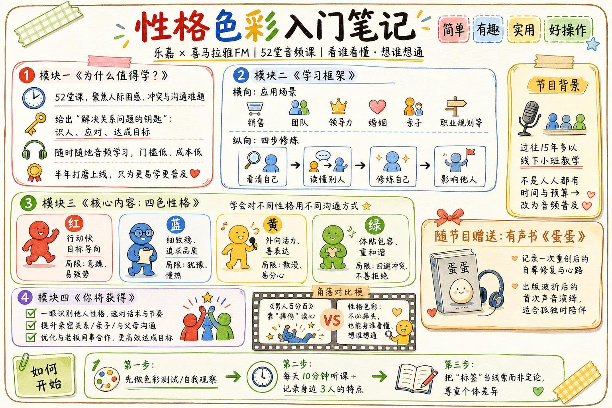
乐嘉介绍性格色彩学，旨在帮助解决人际关系中的痛苦与冲突。节目经过半年打磨，因线下教学受限，改为音频形式普及。体系分横（应用领域）竖（个人运用）两线，本节目聚焦竖线：看清自己、读懂别人、修炼自己、影响他人。52堂课讲解红蓝黄绿四色优势与局限，助人搞定情感、亲子、职场等关系。附赠有声书《蛋蛋》，讲述自尊受挫与恢复。乐嘉以电影《男人百分百》类比，强调性格色彩是简单实用的读心工具。
📖 全文解读（点开看全文）
嗨来自喜马拉雅的朋友，你好，我是性格色彩传道者乐嘉。熟悉和了解我的朋友应该知道，电视主持人，演说家的导师，作家，培训师等等角色。其实对于我个人来讲只有一个意义，那就是我希望能够传播和分享性格色彩给更多的朋友。而今天，我们终于在这里相遇了。在2016年平安夜之前，我和喜马拉雅FM联手推出的这档节目。如果我跟你说必将改变你的一生，你肯定会觉得我在吹牛，但是我可以万分确信的事情是，你在过往人生当中遇到的绝大多数的人际关系的痛苦、困惑、冲突和麻烦，都将在这档节目里面寻找到答案，以及拿到一把通往解决问题的钥匙。 这档节目我们从萌生想法到今天最终上线，前前后后打磨了将近有半年的时间。这里最主要的原因是，在过去十五年的时间里面，我主要是通过办小型研讨会的方式来传播和教学性格色彩。我一直认为，如果没有人与人的面对面的交流和沟通，要学习性格色彩，它是会大打折扣的。可是喜马拉雅的同事跟我讲，并非所有的人都有足够的金钱和时间、有足够的条件来参与这样的学习。如果你希望普及性格色彩，让更多的人因此受益的话，你需要寻找到更方便便捷的方法。所以最终您现在听到的这个节目才成型。 整个性格色彩学的体系非常庞大，分成横和竖两条线。横的这条线主要是指的在工作和生活各个领域的运用，比方说销售、团队、领导力、婚姻、亲子教育、个人职业生涯规划等等。而竖的一条线，主要是指的个人运用性格色彩可以从四个方面：如何看清自己，如何读懂别人，如何修炼自己，如何影响他人。这四大领域里面，其实每一个部分都可以成为一套专门的课程。一口气吃不了个胖子。所以这档节目我的目的非常清楚，就是在最短的时间里面帮助你快速完成"看谁看懂，想谁想通"的性格色彩入门的普及。 我会花52堂课帮助你了解到性格色彩里面红、蓝、黄、绿四种颜色的优势和局限，帮助你知道每一种性格的人内心到底在想些什么，让你能够明白如何去和不同性格色彩的人打交道，才能够更加快速、有力地达成你的目标。当你能够看清别人的性格色彩，知道用什么样的方式来应对的时候，你就会发现所有人际关系的问题会迎刃而解。也就是说，你可以搞定你想搞定的人——包括你的情感关系、恋爱对象、婚姻伴侣、子女，你跟父母的冲突，你跟合作伙伴、老板、朋友之间的矛盾等等。 （节目还赠送乐嘉有声书《蛋蛋》：他认为这是自己写得最好、最文学化的一本，讲述一年前一场飞来横祸带来的自尊打击与恢复心路；出版历经波折；并首次用声音演绎，期待在孤独或需要共鸣的时刻陪伴听者。）最后乐嘉以电影《男人百分百》作比——主演摔伤后获得读懂女人心思的神奇能力；而性格色彩就是不必摔破脑子、却能"看谁看懂、想谁想通"的最好方法：简单、有趣、实用、好操作。他坦言当年在《非诚勿扰》被赞"犀利"和"看人准"，其实都拜性格色彩所赐。
见证
4/4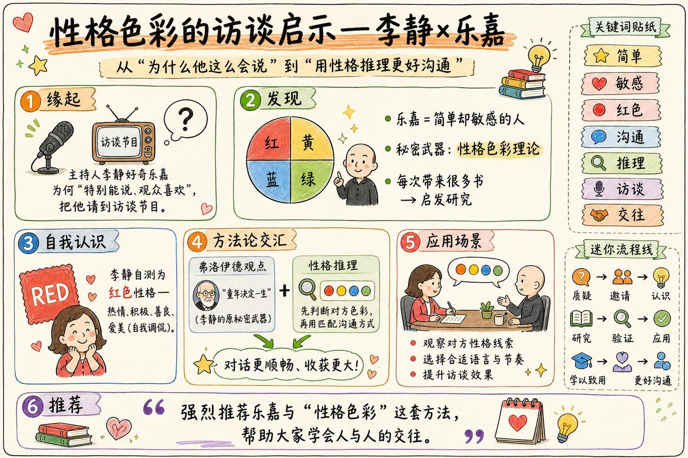
李静讲述了她与乐嘉成为好友的缘由：起初因乐嘉在电视上能说会道而不服气，于是邀请他上自己的访谈节目。她发现乐嘉简单而敏感，拥有性格色彩这一秘密武器。李静研究后得知自己是红色性格，热情积极善良。她作为访谈主持人，原本信奉弗洛伊德的童年决定论，但运用性格色彩后，能通过性格推理与对方交流，收获很大。最后她推荐乐嘉的性格色彩理论，帮助人们学会人际交往。
📖 全文解读（点开看全文）
喜马拉雅的听众朋友，大家好，我是李静，我是乐嘉的好朋友。为什么会成为乐嘉的好朋友呢？就是因为他经常在电视上特别能说，我就很不服气，我在想，这个主持界的门外汉为什么这么能说，还那么多人喜欢他呢？于是我把他请到了我的访谈节目里来。 我发现，其实乐嘉是一个很简单的人，但他又是一个极其敏感的人，而且他掌握了一个秘密武器，就是性格色彩。每一次来，他都会送我很多本他的书。我研究了一下他的性格色彩，得出的结论还是很有道理的。通过乐嘉老师的研究，我是红色性格的人，很热情、很积极，也很善良，也很美丽——最后一句是我自己加的。 我做访谈节目很多年，其实也有自己的秘密武器。因为本人是学编剧的，所以非常崇尚弗洛伊德"童年决定一个人的一生"。但是运用了性格色彩之后，我发现这也挺有意思的：比如你可以研究坐在对面的人到底是什么色彩性格，然后用一种"性格推理"跟对方进行交流，收获还是很大的。 所以我向大家隆重推荐，非常有才华、非常犀利、非常敏锐的乐嘉老师，希望他的性格色彩这套理论和方法，能够帮助大家学会人与人的交往。
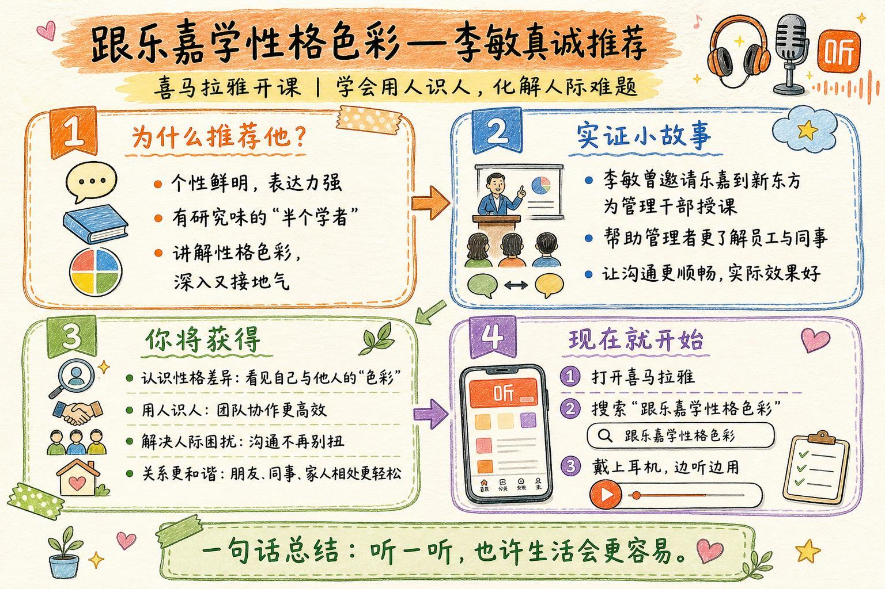
俞敏洪介绍乐嘉是他的好朋友和哥们，最吸引他的是乐嘉的个性和讲话才能，但更看重乐嘉是半个学者，因为讲解性格色彩。俞敏洪曾邀请乐嘉到新东方为管理干部做演讲，帮助管理者了解员工和同事，促进沟通。他真诚推荐听众学习乐嘉的性格色彩课，认为这能解决人际关系问题，让人生更轻松，改善与朋友、家人的关系。
📖 全文解读（点开看全文）
喜马拉雅的听众朋友们，大家好，我是李敏。洪乐嘉是我的好朋友，是我的哥们儿。我们认识已经不短的时间了。他最吸引我的地方一个是他的个性，他的讲话的才能。但是更加重要的是我认为他还算是半个学者。因为他讲解性格色彩，我觉得深深被他吸引。我还专门把他请到新东方来，对新东方的群体做刚才管理干部做过这方面的演讲，对新东方管理者了解自己的员工和同事在工作中间达到更加畅通的沟通，起到了比较好的作用。现在他要在喜马拉雅开课了。这里我真诚的推荐大家一定要听一听跟乐嘉学性格色彩，最后能够用人示人。你以前所遇到的人际关系问题，也可能在这里找到答案。总而言之，听他讲一讲，人生也许变得更加的容易，和周围的朋友关系，和家庭成员的关系，包括也许会变得更加的和谐。
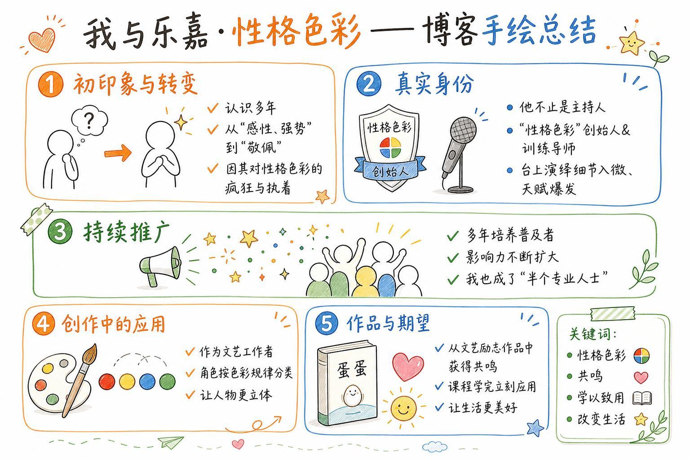
六六分享了对乐嘉性格色彩的认知转变，从最初觉得他感性横行霸道，到因他对性格色彩的执着而敬佩。她指出乐嘉真正身份是性格色彩创始人和训练导师，而非主持人，并称赞其演讲天才和细节演绎。六六提到自己作为文艺工作者，创作人物时会运用性格色彩分类，并推荐乐嘉的新书《蛋蛋》，希望听众从作品中获得共鸣并应用课程改善生活。
📖 全文解读（点开看全文）
喜马拉雅的朋友们，大家好，我是六六。认识乐嘉这么多年，原本只觉得他是个感性又横行霸道的人，但有一件事让我对他产生了敬佩——那就是他对性格色彩的疯狂和执着。 大家可能觉得他是主持人，其实这会让他无比郁闷，因为他真正的身份是性格色彩的创始人和训练导师。我第一次听他演讲，就震惊于他在台上的天才，以及他对性格细微之处的演绎。这么多年来，他不停地培养更多的性格色彩普及者，现在我自己也快成为半个专业人士了。 作为一名文艺工作者，我每次在创作人物的时候，会不自觉地带入性格色彩对我的影响，把人物按色彩规律分类。去年乐嘉写了一本书叫《蛋蛋》。我希望每个听众都能从乐嘉的文艺励志作品中产生心灵共鸣，在性格色彩课程里听完马上应用，让自己的生活更美好。
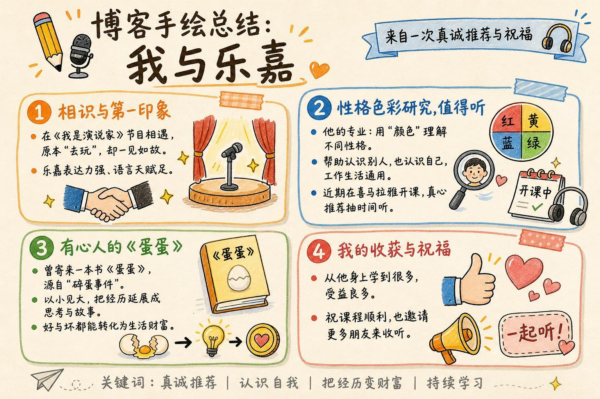
陈建斌介绍自己是乐嘉的好朋友，两人在《我是演说家》节目相识。他称赞乐嘉善于表达且有语言天分，并提到乐嘉的专业是性格色彩研究，将人按性格分为不同颜色。陈建斌认为生活中认识自己和他人很难，而乐嘉的性格色彩研究对此很有帮助。他推荐乐嘉在喜马拉雅的课程，并举例乐嘉曾寄给他一本名为《蛋蛋》的书，该书源于乐嘉亲身经历的“碎蛋事件”，乐嘉能从中引申出生活感悟，让陈建斌觉得他很有心，能把任何经历转化为财富。
📖 全文解读（点开看全文）
大家好，我是陈建斌，是乐嘉的好朋友。我跟他认识是在《我是演说家》那个节目里，当时我是抱着去玩儿的心态，没想到在那儿碰到了乐嘉。 乐嘉是一个非常善于表达自己的人，对语言有很多天分。后来我才知道他还有一个自己的专业——性格色彩研究，根据不同人的性格把人分成几种颜色。我也非常喜欢他。因为在生活当中，我们要做任何事情，首先要学会认识别人、认识自己，可这件事很难做。怎么办呢？我觉得如果你听一听乐嘉的性格色彩研究，就会对你有特别大的帮助。他最近要在喜马拉雅开课了，我真心希望大家有时间一定要听，不管你是做什么的，都会对你有帮助。 另外，乐嘉真是个生活中的有心人。有段时间他给我寄来一本书，名叫《蛋蛋》，我认真翻阅了一下，发现他根据自己生活中的一段经历——也就是那个著名的"碎蛋事件"，居然写了那么厚一本书。他以己度人，从亲身经历里生发出很多别的意思，让我觉得这个人怎么这么有心：他可以把任何一件事，不管好的还是不好的，都引申开去，变成一种真正的生活财富。我从乐嘉身上学到了很多东西，在此真心祝福他在喜马拉雅的课程顺利，也衷心希望更多朋友来收听。
闲聊
3/4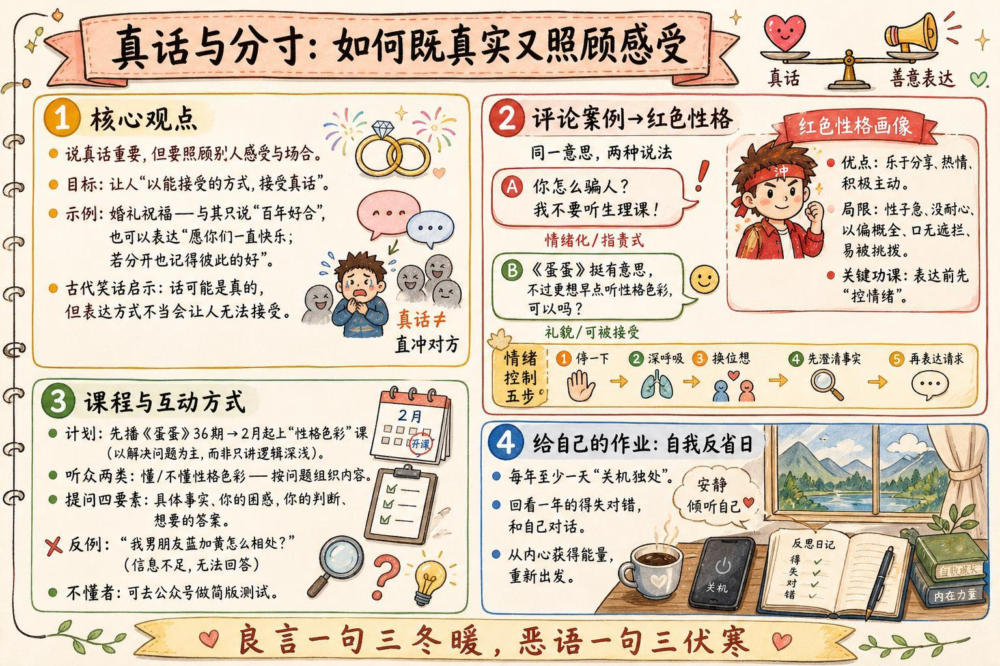
乐嘉以2017年新年在湖边打坐录制的问候开场，探讨说真话与照顾他人感受的平衡。他指出多数人不喜欢听真话，例如新婚祝福时人们期待“百年好合”，而他内心想说的是“希望你们一直快乐，万一分开也能记住彼此的好”，但这种话在喜庆场合会被赶出去，如同古代笑话中唯一说“孩子将来会死”的人被打。他追求既表达真实想法，又让人以能接受的方式接受。接着用喜马拉雅评论案例说明红色性格：性子急、易激动、以偏概全，优点是热情分享，缺点是口无遮拦，需学会控制情绪。他建议每年至少留一天做“自我反省日”，关掉手机与自己相处，复盘得失。
📖 全文解读（点开看全文）
2017年1月1日，乐嘉在山上湖边打坐时录下这段新年问候。他借此谈一个核心：说真话与照顾别人感受之间的分寸。他坦言这世上大多数人未必喜欢听真话——比如新婚祝福，大家要的是"百年好合"，而他内心更想说"希望你们一直快乐，万一要分开也能记住彼此的好、快乐地分开"，但这种真话在喜庆场合会被赶出去；就像古代笑话里，唯一说"这孩子将来会死"的人被痛打——话是真的，却让人无法接受。他想做的，是既说出内心真实想法，又能照顾听众感受、让人以能接受的方式接受。 接着他用喜马拉雅上的真实评论做案例分析性格。原计划先播36期《蛋蛋》、2月起再上性格色彩课，很多人急着想听。同一个意思有两种说法：第一种"你怎么骗人、我不要听生理课、你在欺骗我吗"；第二种"《蛋蛋》挺有意思，不过还是希望早点听性格色彩，可以吗？"。他指出：乐于分享、爱发表言论、性子急、没耐心、不充分理解就以偏概全、情绪容易激动——这就是**红色性格**。优点是乐于分享、热情、积极主动；局限是容易口无遮拦，在影视小说里也常是轻信传言、被挑拨离间、被人当枪使的一群。所以红色性格学会在表达想法时**控制情绪**尤为重要，后续他会用一个个案例讲红色如何认识自身局限、用"情绪控制五部"来管理情绪。 他还提了听众两类基础不同（懂与不懂性格色彩），所以课程不按逻辑深浅、而以"解决问题"为主；并鼓励大家多评论提问，但要给出**具体事实、困惑、你的判断、想要的答案**，而不是只问"我男朋友蓝加黄怎么相处"这种无法回答的问题；不了解性格色彩的可在乐嘉公众号做简版测试。最后他建议：每年至少留一天做"自我反省日"，关掉手机、与世隔绝、只和自己相处，复盘这一年的得失对错——因为学会与自己对话、从内心获得能量，非常重要。良言一句三冬暖，恶语一句三伏寒。
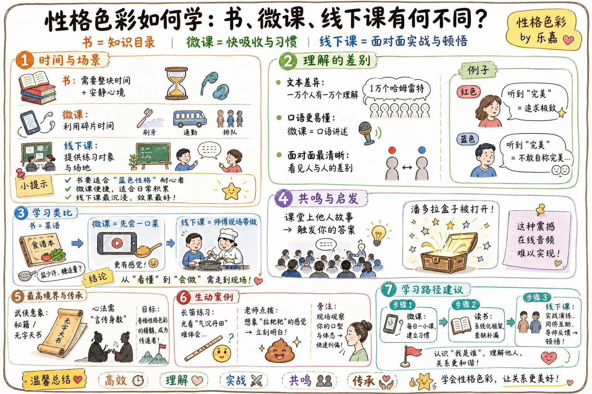
乐嘉用武侠秘籍类比，指出看书、听微课和上线下课是学性格色彩的三层次。看书像读菜谱，但现代人浮躁，蓝色性格才有耐心；微课像品尝菜肴，利用碎片时间；线下课则像现场演出，能面对面观察活人，理解性格差异。他举例红色性格误以为自己是蓝色，因为对“完美”的理解不同；又用学长笛时老师用“拉粑粑”比喻气沉丹田，说明言传身教的重要性。最后强调，线下课能发现陌生人背后的相似性格规律，这种共鸣微课无法实现。
📖 全文解读（点开看全文）
甘乐嘉学性格色彩，让你看谁看懂，想谁想通。我是乐嘉，愿你用性格色彩的力量使自己的生命更美好。有很多朋友问我，乐老师我看你的性格色彩的书，听你的语音的课和参加你的线下课程的差别是什么？今天我想系统来聊聊在武侠世界里面，所有门派的武功都有一本它的秘籍。同样性格色彩也有自己的秘籍。从我2006年开始起，我写了第一本色眼诗人这本书，到现在我已经写了十三本和性格色彩有关的书籍，还不包括性格色彩图书中心出版的越来越多的性格的书。这些秘籍流传的越来越广，所以有很多读者会把它当成修炼性格色彩的终南捷径。他们以为只要看了这些书，就能够掌握所有性格色彩分析的至高秘籍。但事实的真相是不是如果你拿了一本秘籍就能够变身绝顶的高手，那么学校就没有任何存在的价值了。老师们一起卖书就可以了。从2000年开始，我和我的所有的团队致力于性格色彩线下课程的教学和研究。到了现在由于新媒体的发展，所以我为了方便更多的人在不同地域能够以更低廉的成本投资，就能够快速的学习到新格色彩。我选择了线上的微课。如果你问我差别，我可以告诉你有以下几点。第一，时间和地点，人们没有耐心看书。在这个世界上，真正有耐心的就只有蓝色性格，而蓝色问题特别多，他会自己把自己给绕进去，一边看一边绕。看书需要特别整块的时间，特别安静的心境。现代人普遍比较心浮气躁，这是事实。相比较而言，听语音微课可以快速的汲取到干货。你只需要用你的碎片的时间，你可以早上一边刷牙一边听，你也可以在马桶里面例行公事的时候听，也可以下班回家车上的时候听。但是线下的课程是一个畅所欲言的课堂，你可以把性格、色彩和现场活生生的人来进行对应。当你了解了这个工具，可是你练习使用工具的时候，你需要有适合的对象，适合的场地，而线下的研讨会提供了这个场所。第二，在理解上有差别。因为在教育和文化背景上的差异，每个人在理解文字的时候是不一样的。1万个人心里面有1万个哈姆雷特。当红色和蓝色这两种性格的人同时看到完美这个词儿的时候，他们脑海里面想的绝对不是同样一件事儿。而微课因为是用口语讲述，相比较书面语言更容易理解。可是当你真正来到课堂上了以后，你就会发现人和人之间的巨大差别，只能面对面才能真正领略12。曾经有一个红色性格的人，他听说完美主义这个词儿，她就说我一定是蓝色性格的，因为我就是一个追求完美的人。可是当问题真正问到蓝色性格的时候，蓝色性格说你不是因为真正的蓝色性格，她都不好意思说她自己追求完美，她觉得完美这两个字太高级了，他配不上，这就是性格和性格的差别。第三，看书就像看剧本，而参加研讨会就等于看了一场现场的演出，完全没有可比性。这个就好比你熟读了很多菜谱，但是你以为自己是半个大厨，但是真的做菜的时候你才会知道盐少许，白糖适量，这到底是啥意思？你这个怎么掌控油温的变化？搭配的味道远远不如在现场来的有冲击力。所以性格色彩的书就是菜谱，把文字刻在书上，用平面的方式来展现。而性格色彩的微客就像你品尝菜肴，让你的感受更为强烈。但是性格色彩的线下课程可以将活灵活现的人展现在你面前，为你亲自做这道菜。所以辛克色坦的书是一万个基的基金，你可以快速获取一些营养。而微客是每天一小盅的鸡汤，让你一点点的汲取营养，更重要的是帮助你形成每天学习一点点的习惯，对你培养自己的耐心耐性和蓝色的优势大有好处。可是如果你自己想亲手做鲜美的鸡汤，你还是需要有机会去厨艺学校去进修。第四，微课可以让你单纯的听知识技巧，可是来到课堂上会让你发现，那个原来和你素未谋面的人，居然和你有那么相似的经历，而他完全和你不同的背景，在背后的性格规律居然是一样的。他的问题的答案刚好帮你开启了潘多拉的魔盒。这种感受我再厉害，在微课当中无法实现。第五，在武侠小说里面，所有最高的境界的武功都是在无字天书，所谓禅中不利文字，而武功的最高心法也是由师傅言传身教的。所以真正的性格色彩的精髓还是需要在课堂上面来参悟。我期待有一天在我的性格色彩演讲师和培训师的课堂上可以跟你相见。我期待能够帮助更多的人成为性格色彩的传道者，去分享这样一门实用伟大的工具，帮助到更多的人。我年轻的时候学长笛的时候，你想要那个长笛课都说要气沉丹田，气要往下走，这样你的发长音的时候力道才会稳。可是气沉滩田这四个字你听的时候，你看的时候，你很难想象。只有见到我老师的时候，他指出要叫我去想象那个拉粑粑的感觉。这个听上去你会觉得有点搞笑，但实际上面他看到了我的口型，她看到了我的体型以后，然后他马上指出来我的问题，我才知道如何来解决。最后一点，看书，即便你的悟性奇高，你还是无法理解性格色彩对自己和对别人的帮助有多么重要。性格色彩的最大的能量绝对不是给你安上一个符号而已，而是真真切切帮你认识到我是谁，从而让我们每个人可以成为更加真实更加美好的自己。我们可以发自内心的理解别人那些我们看不懂的行为，从而和谐相处。我想读心术的这个微课是我们结缘的开始。如果有一天我们能够在课堂上相遇，我希望能够帮助你剖析的深刻见底。我热爱做培训，我一直觉得自己只是一个老师，最重要的原因是因为在课堂上和学员心灵碰撞得到的快乐和成长超过所有一切的快乐。如果从今世经课，我能够帮你打开这扇窗，就达到了我做语音微课的目的。如果你更希望深层的进入到性格分析的领域，并且掌握这个工具，并且成为一个性格色彩，能够帮助别人的人，开拓你生命的更高的境界和潜能。有朝一日我们在课堂上会相遇的。
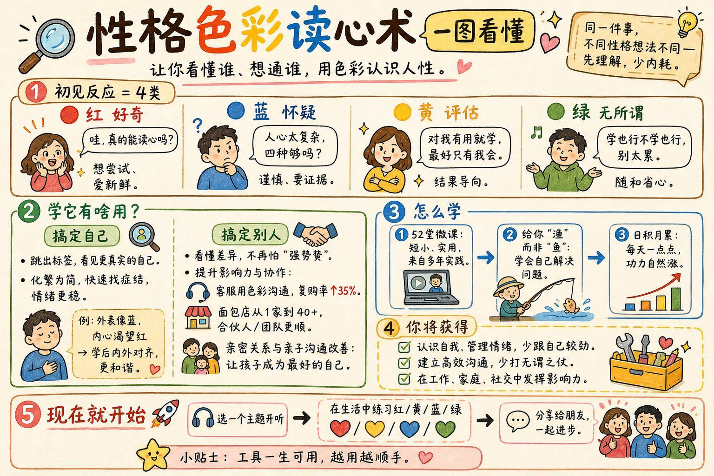
乐嘉指出，不同性格的人对性格色彩读心术有四种典型反应：好奇、怀疑、评估和无所谓。好奇者期待像电视剧一样神奇；怀疑者认为人心复杂，四种性格过于简单粗暴；评估者看重实用性，希望只有自己会；无所谓者觉得不学也能过。这四种反应恰好对应四种性格。乐嘉强调，理解不同性格的想法能让人活得舒坦，减少内耗。他介绍这套微课来自多年教学经验，能帮助搞定自己和搞定别人。搞定自己方面，举例一个被评价为内向的人通过学习发现内心渴望红色激情但外表像蓝色性格，从而找到痛苦根源并变得和谐。搞定别人方面，举例学生通过学习不再害怕强势的人，以及崔万志用性格色彩培训客服使销售额提高35%，温州面包店老板用性格色彩两年扩张到40多家店。
📖 全文解读（点开看全文）
甘乐嘉学性格色彩，让你看谁看懂，想谁想通。我是乐嘉，愿你用性格色彩的力量使自己的生命更美好。嗨我亲爱的朋友，如果你是第一次听到性格色彩读心术这个名字，你的反应是什么？事实上不同性格的人会有不同的反应，我可以简单把它总结为四大类，你看看你是哪一类？第一种好奇，哇哦真的可以读心吗？是不是就像电视剧里面那么神奇，真的可以窥探到他人的内心的这这样的话不是我也变成了一个特别神奇的人了吗？第二类怀疑，在这个世界上人这么复杂，人心如此难测，你怎么可能通过学习一个工具就变得这么容易探测得到呢？人怎么可能那么容易被分析出来呢？天下人心如此复杂，你怎么可能用四种性格就把人给囊括了呢？未免太过于简单粗暴了吧？不可信。第三种评估，如果我觉得这个工具对我有用，那就是好东西。如果没用，那我就不去理他。假如真有读心术，我希望这个世界上只有我会，其他人最好不会。第四类无所谓，学也可以，不学也可以，干嘛要花那么大力气去搞明白别人的想法呢？不明白不是日子过得也挺好的吗？别人要来读，我的心就读好了呗，我又无所谓喽，反正我自己不想很累的去读别人。刚才我提到的4种最典型的想法恰好出自于4种不同的性格。如果你的想法和其中的一种比较相似，也许你可以从当中看到自己性格的一角。我想说明的是，不管你学不学性格色彩，这个世界上对同样一件事情，不同性格的人的想法就是不一样。如果你能够尝试去理解，即便不能够立竿见影的改变什么，至少你会活得比较的舒坦和释然。假如你始终不能够解开这些生活的谜题，那你的工作和你的生活或多或少会有无数的辛苦，甚至会损耗很多不必要的心力。你会跟自己较劲，跟他人打不必要的仗。你现在听到的这五十2堂性格色彩读心术的微课，我只是以输血的方式，每天打一管新鲜的血液给你，他们都基本上来自于我多年的教学经验，还有我们的老师以及学员们在研讨会上的经验累积。我希望每一讲十几分钟，听完你都可以获得一些快速实用的营养。但更重要的事情是在整个这套课程里面，它有一套红蓝黄绿的性格色彩的体系。也就是说这个体系会贯穿你整个的一生，成为你一生都可以使用的工具。如果说到此刻为止，你并没有来过我们的课堂正式学习性格色彩。你现在正在收听的读心术的微课，可以让你至少在两大方面有所收益。第一，搞定自己。没错，我没有说搞定别人，我说的是搞定自己。你可以跳出别人对自己的评价，看到一个更加真实客观的自己。曾经有一个从小到大都被别人评价为内向、闷、不好玩、无趣的人，活得非常痛苦。她不知道自己的问题在哪里，直到她开始学习性格色彩，发现自己的内心渴望那种红色的激情和乐趣。但是她的外表却像蓝色性格那样少言寡语，小心谨慎，而这种矛盾恰恰是他内心一生当中痛苦的根源，所以当他来到课堂上深入的学习，性格色彩终于豁然开朗，找到了真实的自己，然后她的内外也变得非常的和谐。还有一种可能叫人在江湖飘，哪有不挨刀。每一天你和我我们都会遭遇到各种各样的压力和情绪的问题。我也有竞争激烈焦虑感，房价暴涨，觉得人生不公平，工作会有倦怠，不喜欢情感当中求而不得，身处折磨当中，生命当中重大的打击和挫折以后自卑、消沉、颓废，为家庭付出的责任，需要带来的人生的这种束缚，有的时候不知道该如何选择。我们没有办法来满足别人眼中的自己的期待的时候的那种自责，无意当中不小心伤害了别人。我们有可能会后悔遇到一些没有办法解决的难题的时候，充满了人生的彷徨和困惑等。而性格色彩它是一个实用的心理学工具，当你对它有所了解以后，最起码你可以化繁为简，你可以知道哪些问题适用方法，可以快速找到症结，直截了当的解决。记住，我希望给你的是余，而不是给你的是余。我不希望你听完了以后，碰到所有的问题都来问我，因为我确定会给你的这个工具，让你有能力解决自己生命当中的很多很多麻烦。第二，搞定别人。当你去面对一些很难去面对的人的时候，你会需要性格色彩的力量。我有一个学生，在他学习性格色彩以前，他特别害怕和强势的人相处。方圆百米以内，只要有一个气场有点强的人，哪怕没跟她讲话，她都会很紧张。当他学完读心术的初阶课程以后，他突然发现，其实那些强势的人只是性格的规律，人类最深处的恐惧很多都是来自于未知。所以当他能够理解为什么有的性格会那样，而自己为什么会这样的时候，他害怕的感觉就自然而然减轻了当他继续学习下去以后才发现，怎么样去应对这种黄色性格，天性强势的人他根本无需害怕。第二，当你需要用性格色彩搞定别人的时候，你需要去发挥个人的影响力。我的学生崔万志在超级演说家得到亚军的阿里巴巴的十大网商做旗袍生意。他学了性格色彩以后，让他所有的淘宝网店的客服都来学习，用性格色彩和客户沟通，将客户的重复购买率和销售额大大提高了35%。而我有另外一个学生在温州，当年刚来学习的时候，只有一家面包店学了性格色彩，用性格色彩搞定了合伙人、投资人、管理团队两年以内迅速扩张，现在已经拥有了四十多家连锁店，成为国内知名的品牌。这样的事情在情感关系和家庭当中比比皆是。有夫妻关系边临破裂，一起来学性格色彩，把这个当成他们最后一次尝试，努力修复彼此的关系，结果在课堂上面相拥而泣，痛哭流涕。还有很多很多的父母搞不懂他小孩在想什么。学习以后才发现孩子的性格跟自己不一样，他原来是希望把孩子塑造成为她希望的那个人，而事实上正确的方法应该是让孩子成为最好的自己。当你越来越多的了解性格。你和别人相处的时候，你就不会拿自己的职位的权威或者角色去压制别人。你可以更好的建立起来良好的沟通的管道，发挥出你自己的影响力。不管你现在是有权无权，有名无名，有利无利，不管你在社会的阶层，不管你的背景如何，我们每一个人都需要去影响周围身边的人。性格色彩的学习是一个日积月累的过程，一开始你可能会觉得是新奇和好玩，可是在不知不觉当中，你每天听一点点故事，每天了解一点点规律，你的功力自然而然会逐渐积累。日久天长，你慢慢就会领略到比我今天说的更多的用处。在此时此刻，我只想告诉你，一切都是刚刚开始，我和你有一天也许会在那个拐弯最美的风景的地方，我们会相遇，我期待着那一天早日到来。如果我今天的分享对你略有注意的话，请你动动手指点击屏幕下方的请朋友听，将本期微课分享到朋友圈和微博，我希望能够帮助到。
性格色彩正课
28/57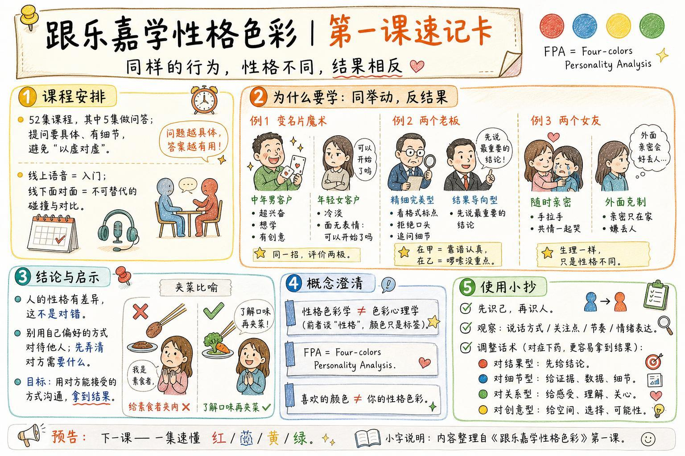
乐嘉用三个亲身例子说明同一行为对不同性格的人会产生完全相反的结果。第一个例子：他变名片魔术，五十多岁男客户兴奋学一小时，觉得他有趣；三十岁女客户冷若冰霜，只催他谈正事。第二个例子：第一个老板追求完美，逼他做事仔细；第二个老板雷厉风行，嫌他汇报啰嗦。第三个例子：一个女友黏人，另一个独立；他因《可可西里》痛哭，独立女友嫌丢人踢他走，黏人女友则会陪他哭。由此归纳两点：性格差异客观存在，我们常把别人不同当问题；我们总用自认为好的方式对人，却不知对方不需要。学性格色彩是为了了解自己与他人，用对方接受的方式交流。
📖 全文解读（点开看全文）
这是《跟乐嘉学性格色彩》正式的第一课。乐嘉先交代安排：52集里会拿出5集做问答，提问要尽量具体、有细节，否则"以虚对虚"什么问题都解决不了；并强调线上语音能帮你入门，但永远无法替代线下面对面的碰撞与对比。 为什么研究这套学问？他用三个亲身例子说明同一个核心——**同样的行为，对不同性格的人会得到完全相反的结果**： ① 变名片：他做销售时学了个把黑名片变白的小魔术。对第一个五十多岁的男客户耍，对方超级兴奋、缠着他学了一小时，觉得他有趣可爱有创意；两周后对一个三十岁不到的女客户如法炮制，对方全程冷若冰霜、面无表情，秀完只淡淡说"乐先生不错，我们可以开始了吗"，十几分钟就下逐客令。同样一招，一个爱到不行，一个把他当跳梁小丑。 ② 两个老板：第一个老板做事极其仔细、追求完美——先看报告格式标点行距、不接受口头汇报、问的全是你没想到的细节；两年把马大哈的乐嘉逼成了做事仔细的人。第二个老板雷厉风行、只关心目的和结果。乐嘉用伺候第一个老板那套"1234、逻辑条理数据细节"去给第二个老板汇报，刚开口就被打断："你要告诉我最重要的部分是什么？"——同一套方法，在第一个老板眼里靠谱认真，在第二个老板眼里啰嗦没能力。 ③ 两个女友：一个随时随地要手拉手、黏成连体婴，不粘就怀疑你有外遇；另一个在外面连勾肩都如临大敌，认为亲密只能在家、给人看见是大逆不道。有次他看完《可可西里》蹲在马路上为藏羚羊抱头痛哭，第二个女友嫌丢人、拿脚踢他"快走"，扭头就走；而第一个性格的女友一定会蹲下来陪他一起哭、理解他。生理上两个女友一模一样，差的只是性格——一个觉得亲密要靠肢体黏合，一个觉得"莫斯科不相信眼泪"、男人要坚强。 由此他归纳两点：**第一，人和人的性格是有差异的**，我们却常把"别人和我不一样"当成别人的问题，其实只是性格不同；**第二，我们总用自己认为好的方式去对待别人，却不知道别人根本不需要**——就像吃饭一个劲儿给爱吃素的人夹肉，自以为是的好，结果很悲催。学性格色彩，就是更深地了解自己是什么人、别人是什么人、别人要的和你要的是否一样，再用对方能接受的方式去交流，拿到你想要的结果。 最后澄清三点：① **性格色彩学 ≠ 色彩心理学**——后者讲颜色对心理的影响，前者重点在"性格"，颜色只是分类符号（叫"性格水果·香蕉苹果橘子梨"也行）；② 性格色彩学英文是 **FPA（Four-colors Personality Analysis）**，取三个词首字母；③ **你喜欢什么颜色和你的性格色彩没有必然联系**，颜色只是符号。下一课用一整集让你迅速看懂红蓝黄绿。
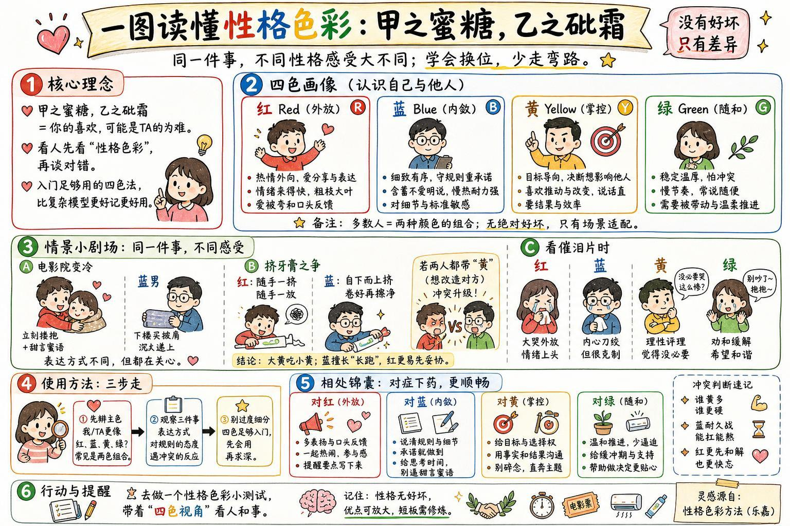
主讲人通过一个恋爱案例说明红蓝性格差异：红色性格女孩希望男友直接表达不满，而蓝色性格男孩认为应有默契，不愿直接说。接着用电影院场景举例，红色男孩会直接搂住女友，蓝色男孩则默默买衣服。最后总结红色性格擅长甜言蜜语，蓝色性格不擅长，导致红蓝恋爱中红色渴望甜言蜜语却得不到，形成冲突。
📖 全文解读（点开看全文）
甘乐嘉学性格色彩，让你看谁看懂，想谁想通。我是乐嘉，愿你用性格色彩的力量使自己的生命更美好。第一堂课我们讲的内容是甲之蜜糖，乙之砒霜。也就是对你来讲是一个特别棒的事儿，对另外一个人可能是一个特别糟的事儿。对你来讲是快乐，对别人来讲可能是痛苦。从道理上来讲人人都明白，但是在现实生活的人际关系里面，并非所有的人都能够理解这句话。而这种思维模式的形成将会使你理解在大千世界，发生在你自己周围身边很多原本你不能够理解的事儿。比方说两个人谈恋爱很多年以后分开了，这个女孩痛苦万分，她就找到很多人去诉苦。她说我真的不明白，我对她非常的好，但她似乎总是对我很不满意。可是我问她，你到底对我哪里不满意？你说你说，你说出来说出来不就没事了吗？你有什么事儿你干嘛不直接说？她说这个人总是要叫我猜，可是我猜不出来，我猜的肠子都已经花掉了，还是想不出来。可是她为什么就是不肯直接讲呢？可是同样的一个事儿，如果你去问这个男方，这个男孩可能就会在家。我觉得我已经暗示的够明白够清楚了，干嘛所有的事情都要直接说出来呢？这样直接说出来有意思吗？我觉得如果你逼着我，一定要叫我直接说出来的话，我感觉就像让我把我的肚子给剖开，把我的心肝肺全部都拿出来放在桌子上面。然后我来告诉你这是我的心，这是我的肝，这是我的肺。他说我觉得人和人之间在一起这么长时间，彼此之间应该有默契，应该有理解，有必要一定要拿出来说吗？她说她老是逼着我直接这样说，我觉得我实在是忍受不了，我没有办法来过这样的日子。上面我描述的这种对话，如果你对于性格色彩有一点点基本了解的话，你会很明显的发现，第一种性格的人是典型的红色性格的人，而第二种性格的人是典型的蓝色性格的人。前者他们乐于分享，他们期望大家都能够把自己内心所有的话全部敞开天窗说亮话。而第二种性格的人，他们非常的含蓄低调，他们喜欢用暗示的手法让别人明白他内心的意思。他觉得很多东西，人和人之间最高级的关系应该是一种默契，你不说我啥都知道，我不说你啥都知道，如果全部都说出来，他觉得就破坏了这种意境的美。在现实生活当中，这两种人出现的情况就非常多。比方说两个人一起去看电影，这个红色的人穿的衣服穿的比较少。夏天电影院里面空调开的很大，进去了以后没过五分钟，这个女孩就表现出来这个肢体动作，就感觉到很冷。如果在他旁边的人是一个典型的红色性格的男孩，这个男孩可能会赶紧直截了当把这个女孩给搂入怀中，然后一边搂一边帮她搓这个胳膊。告诉给她，你冷不冷？要不要我们现在赶紧回去，你看你刚刚出来的裸川这么少，然后两个人就你侬我侬，然后卿卿我我。可是如果这个男孩是一个蓝色性格，这个蓝色最有可能做的事情，如果两个人刚刚开始谈恋爱还不是很熟。他说你稍坐一下，跑到楼下商场里面看看有没有什么衬衫可以临时御寒的。买个一件回来以后，然后坐到座位旁边，啥话都不说，把这个衣服往她身上一放，说你先披一下。她也不会说什么甜言蜜语，也不会有很多的话。他完全是用实际的行动来进行传达。所以我开了这个头，我希望把生活当中很多原来你不能够理解的事儿给串在一起。这个就解释了为什么在谈恋爱的时候，很多人经常会来讲这个甜言蜜语的男人是不是可以值得信任，为什么有的人他就嘴巴很甜，而有的人嘴巴一点情话都不会讲的。当你了解了性格色彩以后，你很容易就会明白，在四种性格里面最擅长讲甜言蜜语的肯定是红色性格。因为红色性格他们会乐意于把一些情感方面的语言放在嘴巴上面来进行表达。我很爱你，我很想你，我很在乎你。不仅是情侣之间，伴侣之间，包括父母与子女之间通通都是这样。而典型的蓝色的人，正是因为他的性格特点，他认为很多话没有必要放在嘴巴里面。所以你会觉得典型的蓝色性格的人，要想让他们说你一句好话，那简直是势比登天。所以结论就是在所有的性格里面，最渴求听到甜言蜜语，听到好话在嘴巴里面不停的重复讲的那就是红色性格，而最擅长讲的也是红色性格。所以当两个红色性格在一起情感碰撞的时候，他们不会有这方面的问题，而这方面的问题对于红色跟蓝色来讲，可能就是一种莫大的灾难。因为他们很不擅长，当然我现在是刚刚开始，红色跟黄色，红色跟绿色也会有同样的问题，因为那两种颜色也很不擅长，只不过他们不擅长的方式和模式有差别而已。我在后面会来详细解释给你听。回到我开篇讲的第一句话，甲之蜜糖，乙知砒霜。也就是对于你这种性格来讲非常享受的一件事情。对于另外一种性格可能是非常为难的一件事儿。我希望你一定要把这个基本的性格色彩当中的思维模式给牢牢的根植入你的血液。因为接下来我们探讨的所有的案例和你去理解所有的人和人之间的差异，这将是一个核心的基准点。好了，我花了这么多时间来复习上节课的内容，你千万不要嫌我啰嗦，因为你未来以后会发现所有的问题都和这八个字有关。那么用什么样的方法可以让我们快速的能够理解人和人之间的四种性格类型的？在这个问题进入之前，很多人会来问道，难道你只用四个颜色就可以把人的性格给囊括了吗？我觉得大千世界人性这么复杂，我觉得要用8种、16种才可以把它解释清楚，四种未免太过于简单了。我想告诉你的事情是，如果我说人分成32种性格，你还能记得住吗？我见过很多人，他们学习16型人格，他们学习32种、64种，到现在连他们自己都讲不出来。而四种类型的分类方式足以把很多复杂的现象寻找出来当中的规律。这就好比当你在评价一个人的时候，你会说这个人是内向还是外向的，这个人是脾气暴躁还是脾气温和，这个人是乐于和人交往还是说特别封闭不愿意交朋友的等，你会用你的词来囊括。这就好比当你在描述方向的时候，你会说东西南北，你说季节的时候会说春夏秋冬。但是你详细来讲，还有分东南东北、西南西北。你如果详细来讲，像有的地方，你像某些地方，它的四季特别的鲜明和分明。但是如果你到云南这样的地方，一年四季如春，你基本上很难把它严格的用四季来定义。但是即便如此，它还是会有一些细微的差别。所以如果你详细要来讲红蓝黄绿的分类里面，红蓝黄绿的4种大的分类，它又分成红加黄、黄加红红加绿绿加红蓝加黄黄加蓝红加绿、绿加红，又会分成8种组合。而又有先天和后天之分就会演变万化。所以我们不要把事情搞得太复杂，在一开始学习进入的时候一定要简洁好操作。等到后面你学的逐渐深入的时候，它会有无限可以运用的空间。有一个挤牙膏的故事，不知道你听过吗？从2001年到现在16年的时间里面，我大概讲了有5000遍的挤牙膏案例。在所有的公众场合，只要是我第一次见到别人来普及和传播性格色彩，我一定会拿它来说事儿。这里面讲的就是一个红色性格和一个蓝色性格生活在一起，生活习惯不一样，红色拿起来牙膏随手一挤，而蓝色性格一定是从牙膏的底部由下向上挤，而且挤完了以后还要不停的卷起来，保持牙膏形状的美观。刷完牙以后放回到茶杯里面，把所有的台面都擦得很干净。而红色性格可能随手一扔东西弄得乱七八糟。这两种人的生活习惯他们本来就有差别，可是最主要的冲突是两个人在一起，红色每天在前面刷完牙都是蓝色在后面帮他擦屁股，帮他给弄好。有一天蓝色就忍受不住了，她说能不能拜托你弄弄好，每天都是我收拾的。红色说没问题，明天我就改过来。结果他答应了以后就忘了。到了第二天这个时候，蓝色就很生气，把脸拉下来给他非常深的脸色看。那红色知道自己错了，又过了一天早上他就把他挤得很好。她挤完挤得很好以后，她在房间里面转来转去。她希望这个蓝色性格的人看到她的变化和进步，能够表扬他。但是我前面已经讲了，蓝色性格他认为很多东西是理所应当的，这个事儿根本就没有必要说，这就是本来你应该做的。结果啥都不说，再坚持了两天，红色性格就坚持不住了，又回复到以前乱七八糟的样子。这个时候蓝色性格真的就开始生气了。他说你前两天弄的不是不错吗？今天怎么又恢复到原来的样子？那红色就说我昨天做的好了，你怎么不说今天我做的不好？为什么你就这样来说我？你不觉得家里面弄得很整齐是一件天经地义的事情吗？这个事情还要我跟你讲吗？我没怎么觉得，我觉得单位里面已经够辛苦了，回到家里面来就是要随意一些。每天东西弄得这么一本正经的，你不觉得生活在一起很累吗？你不觉得东西弄得乱七八糟，过得很累吗？我没有觉得，然后这两个人就开始吵起来。现在问题来了，挤牙膏不一样，那是因为红色和蓝色的性格的差异。可是天底下挤牙膏方法不一样的家庭多了去了，为什么有的人家会吵架，而有的人家不会吵架？那就是和另外的两个性格有莫大的关系。关于黄色和绿色，所以请各位听清楚。如果你的性格当中有很多黄色的成分，黄色的意思是希望能够掌控，希望能够改变和影响他人。而如果你的性格里面有很多的绿色的成分，绿色最大的特点是乐天之命，与世无争，不愿意跟他人发生人际关系的冲突和摩擦。无所谓。在接下来的学习里面，你会翻来覆去的思考一个问题，就是到底人的性格是一种性格还是两种性格的组合？我先给你答案，慢慢再给你解释。无论你的性格多么复杂，不管你认为你身上具备了多少红蓝黄绿4种性格的特点，在每个人的天性当中最多用两个颜色就会把你给囊括。不过有的人可能是一种性格，有的人可能是两种性格。在刚才我讲的挤牙膏的这个冲突吵架的案例里面，显然这两种性格的人都不是省油的灯，他们都不是红加绿或者蓝加绿。如果他们两个人真的性格当中都有很多绿色的话，那他们就不会因为挤牙膏的差异而吵架吵起来。前面的这个女的她的性格里面除了红色以外，她还有很多的黄色性格。因为当这个蓝色性格的人来改造她的时候，她的本能反应是反弹。你好好跟我说，多给我一些表扬，我就改过来了。不过你现在这么强硬的对待我，你越想让我改，我越是不改。所以她的性格里面有很明显的反抗性。而对于那个蓝色性格的人来讲，他认为这件事情你必须要改，明明是你错的，你为什么不认错？反正你一定要把它改过来。他不仅注重规则，同时他还有强烈的要去改造和改变别人的欲望。在性格里面她有很多的黄色性格，所以对于这个男性来讲他是一个蓝家皇，而对于这个女人来讲，她是一个红家皇。两个人的第一色性格在做事情方面有粗心和细心的差别，而他们都有的黄色性格都要去改造对方，一个是你必须得变，另外一个是我就是不变，所以他们两个黄色的成分就在一起打架。那么现在你要思考的问题是，当一个红加黄性格和一个蓝加黄性格，因为一个问题意见不统一发生分歧冲突的时候。他们两个人吵到最后谁更加厉害？这个里面答案会有两个。第一个取决于谁性格当中黄色的成分更多。黄色成分更强烈更大的人，通常情况下会在冲突当中占据了上风，所谓大黄吃小黄。而第二个很重要的原理是一般情况下更有可能获胜的是蓝家伙。因为典型的以蓝色性格为主的人，在内心深处他们对一个事情更加的坚持。而以红色性格为主的人，他们可能没有那么多的持久性和耐力，这就解决了红色性格是短跑的高手，而蓝色性格是长跑的高手。典型的蓝色性格为主的人可以跟你吵架，把脸拉下来，几个月不跟你说话，不理你。而红色性格三天之内不理你，可以坐得住，三天以后撑不住就跟她说，对不起，我错了。所以有意思的事情是，这个人的红色性格越多越容易妥协，这个人的蓝色性格越多越持久。而这两个人谁黄色性格更多可能会更加硬。所以性格冲突的模式，当你深入学习下去以后，你会来发现，当他们的这个红蓝黄绿的比例出现差别的时候，他们对同一个事情的反应也会有差别。那你会马上思考一个问题，这里面会不会有一个非常复杂的公式来计算他30%的黄色和40%的黄色，这个人会有差别吗？我要求求你千万别把它想的太复杂，太复杂运用起来你就用不了了。性格色彩的学问，他并没有这么复杂的公式让你去对照。在很多情况下，我在后面会用大量的案例来跟你证明人和人之间的很多交流。你只要掌握了性格的规律，你就可以寻找到他的核心的内心的动机。好了让我们复习一下红蓝黄绿的基本概念。红色性格快乐，乐于和人交往，心态开放。他们不拘小节，天性当中做事情没有那么的仔细，可能答应了别人的事儿，有的时候会忘。而蓝色性格他们对于细节调理规则非常的关注，并且他们极其注重承诺，如果我说到的事情，你我一定会做到，不过如果你答应我的事情，你一定要做到。就像前面那个人答应他把挤牙膏改过来，结果后来没有改这个蓝色就非常的生气。而典型的黄色性格，他们具有强烈的改造和改变的欲望。他们内心深处想要去影响他人，希望别人能够听他的，这是黄色性格内心的声音。而绿色性格最最不愿意跟他人冲突。所以那种所谓的老好人，这种出去的时候，吃饭点菜的时候经常说随便，不愿意拿任何的主意，你怎么决定我就怎么来的，通常都是绿色性格。现在你就可以明白生活当中一些很简单的事儿了。一个寝室里面有四个人在看电视，电视非常感动。这个红色星格在看的时候看到这个感动的情节，立马之间哭的死去活来，然后涕泪俱下。就觉得电视当中的这个情节和故事就像发生在自己生活当中一样，身临其境。而典型的蓝色星格看到了以后，内心深处心如刀绞，痛苦万分。但是他会尽他最大的努力在表面上面控制他的情绪，不让他的情绪呈现出来。而黄色性哥在看的时候，他觉得这个电影很好看，觉得这个电影很不错。但是他觉得根本没有必要哭，这个电视就是电视是假的，哭个屁。当他发现那个红色性格哭的时候，她还会去说，他说你哭啥哭，这假的有啥好哭的。这个时候红色被激怒了，他说你这个人这么没良心，这么感动的片子你也不哭，于是两个人就开始闹起来。这个时候绿色性格就在旁边说，他说好了，你们别说了。那他说我们去出去玩吧，不要再吵了，这个事情有什么好吵的。绿色性格的人她基本上也很少哭，但是如果她发现你们都在哭的话，她会陪你们一起哭的。典型的绿色的人情绪非常的平静，她很难受到外界事物的影响。而红色性格的人却是最容易受到外界事物影响的人。所以你现在发现了红和蓝两种性格，很容易受到情感和情绪的影响，而黄和绿两种性格都不容易受到他们的影响。红和蓝的差别，红的情感和情绪是外放的、外露的，而蓝色性格是内敛的。黄和绿两种人的最大的差别，一个喜欢做决定，有主见，希望能够掌控自己的人生，也希望影响别人，而对于绿色性格来讲，他没有兴趣影响别人，甚至连影响自己也没有兴趣，一切都是随意。她希望有一个人能够推动引导他。如果你从小成长到大，你爸和你妈啥事儿都要来管你穿什么颜色的衣服，扎什么样的发型，考什么样的学校，挑什么样的女朋友，然后吃什么东西啥都要管。那恭喜你，你遇到了黄色性格的父母。而如果你爸妈随便什么东西问他，你考大学的时候考什么专业，问他你自己其实心里面没有主见。结果你老爸老妈说，天要下雨娘要嫁，你已经长大了，自己决定，只要你自己喜欢就好。那恭喜你，你也中招了，你遇到了一个绿色性格的人。所以现在你可以发现，为什么你跟有的人会冲突，有的人不会冲突。那你会来问我到底什么颜色的人好呢？这个话又是白问的。首先这个人性格好不好取决于你是什么性格，你的性格决定了你跟他会不会引起冲突。如果你是黄色，他也是一个控制欲很强的黄色。当然你会觉得这个人管的太多，你会很愤怒，你会觉得有一个绿色的人跟你在一起多好。但是如果你是绿色的人，你希望别人拿主意，这个时候你会觉得黄色很好，因为有黄色在啥都不用操心。而如果你周围身边你爸你妈是一个绿色的人，你会觉得要了命了。问他们还不如不问。所以对方的性格好不好，首先是取决于你自己啥性格，你跟她相处的怎么样。第二个，每种性格的人都有自己的优点跟缺点，不管是红蓝黄绿当中的哪一种，我在接下来的几集节目里面会详细来跟你阐述每种性格的优点跟他们的局限性。然后你就会发现其实性格没有好坏，但是每一个人都需要通过后天的修炼来让自己把优势发挥到极致，来控制自己的性格的毛病和缺点，让自己付出的代价。今天这集讲的特别长，最后要告诉你两件事情。第一个，如果你对于自己的性格测试从来没有做过的话，你可以进入到公众微信号，搜索乐家来做一下网上最普及版本的性格色彩的初级测试，来看看你的性格大概是怎么样。第二件事情，我已经开通了喜马拉雅的问答。你在收听节目的时候，如果是很简单的疑惑，那你就慢慢听，你有耐心听，总有一天我会解决掉你的问题。不过如果你的问题比较个人化，你希望解决更多的问题，或者你对很多问题更好奇的话，你可以在播放页面点击右下角。现在有一个向他提问，随时向我提问，我会及时回复你的问题，让我们下期节目再见。
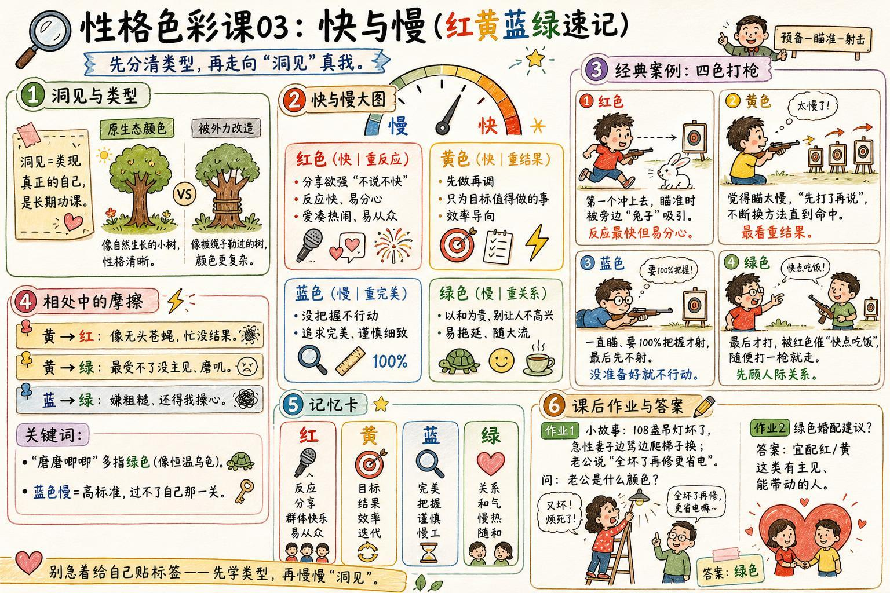
乐嘉以红蓝黄绿四色分析快慢差异。红色反应最快但易分心，如打枪时被兔子吸引；黄色重结果，先打再说；蓝色追求完美，瞄准太久不射；绿色照顾人际，被催就随便打。红色爱凑热闹、轻信从众；黄色嫌红色无头苍蝇，蓝色嫌绿色粗糙，绿色最磨叽。举例妻子催老公换灯泡，老公拖延说全坏再修省电，判断为绿色。
📖 全文解读（点开看全文）
从第三课起，乐嘉用几课把红蓝黄绿每种颜色的优点缺点讲清楚，再进入解决问题阶段。开头他回应最高频的提问"我到底是什么颜色、为什么每种特点我都有一点"：在性格色彩里这叫"洞见"——发现真正的自己是很漫长的功课。有人是"原生态颜色"（成长中没被压制改造、没经历重大打击），性格辨析起来清晰；有人成长中受过巨大外力改造压迫，颜色会变得复杂。如何洞见真我放到后面深课，此刻先把四色的类型特点分清楚。 本课主题是"快与慢"。他先点出一个现象：网上热衷评论回复、性子急的，几乎都是红色——因为红色最有分享、倾诉、发言的欲望，"不说不快、不吐不快、不做不快"；而黄色除非确保能拿到想要的结果，否则不浪费时间。红黄都快，但差别在：红色重"反应本身"、对结果没那么在意；黄色重"目标结果"。 经典的"四色打枪"例子：教练示范"预备—瞄准—射击"。①红色第一个冲上去，瞄准时瞥见旁边有只兔子，注意力立刻被吸引分散——反应最快但易分心。②黄色拿枪觉得瞄准太浪费时间，"先打了再说"，不行再换方法直到打中——最看重最终命中目标。③蓝色一直瞄、瞄、瞄，要100%把握才射，结果瞄太久干脆先不射——天性追求完美，没准备好就不行动，所以做事慢。④绿色最后才打，刚要射，红色催"吃饭啦你怎么这么慢"，绿色赶紧随便打一枪就走——一切以照顾人际关系、别让人不高兴为第一位，所以也慢。 由此：红色还爱凑热闹（讨论去哪玩，谈论本身就快乐，去哪到时再说）、街上围观看热闹、也最容易轻信从众而上当；红色多数享受群体碰撞的快乐（但也有红色喜欢独处，乐嘉只说概率上红色更爱群体）。快的会嫌快的：黄色常骂红色"像无头苍蝇，东忙西忙没结果"。慢的会嫌慢的：黄色最受不了绿色没主见磨叽，蓝色嫌绿色粗糙得过且过、还总要自己操心。形容一个人"磨磨唧唧"通常指绿色（内心最好不做、做不做无所谓，像恒温的乌龟）；蓝色慢是因为谨慎仔细、必须做到最好才交差，过不了自己那关。 课末两道作业题：①一对夫妻，妻子洪加黄、泼辣性急；家里108个灯泡的大灯坏了，催老公换，老公"知道了"却一直不动，坏到第三个妻子自己爬上去边换边骂，老公还慢悠悠说"急什么，全坏了再修也来得及，还省点电"——判断老公是什么性格？②绿色性格在婚姻里速度慢，找什么性格搭配比较好？（下一课公布答案：老公是绿色；绿色宜配红/黄这类有主见、有激情、能带动的人。）
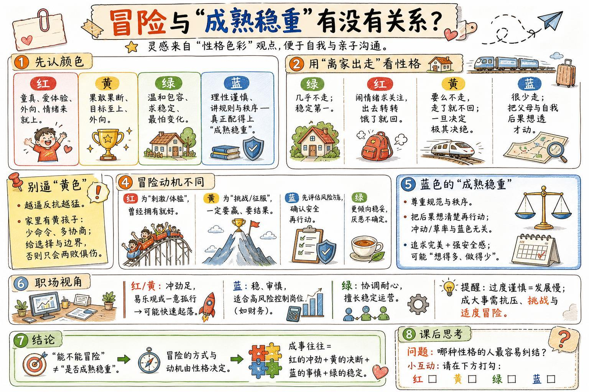
乐嘉用离家出走为例区分性格。绿色追求稳定，最不愿离家；红色为求关注而假装出走，几天就回；黄色一旦决定出走就绝不回头，如学员小伟12岁被父亲赶出门后躲草垛、扒火车到西安打工三个月才联系家里，或《大宅门》中陈宝国被打晕也不认错。蓝色离家不多见，因尊重道德规范，会深思熟虑所有后果才行动，冲动草率与蓝色无关。蓝色与绿色都不爱离家，但绿色是绝对不走，蓝色可能想得多做得少，追求完美且重安全感。职场中蓝色因谨慎被需要，但过于谨慎也难快速发展。
📖 全文解读（点开看全文）
乐嘉从小被妈妈骂"不成熟稳重"，爸爸却是极稳重的人。后来他在上海创业才发现，身边事业做得大、有钱的人多半是凶狠、敢冒险的，而很多成熟稳重的人过于老成、不善冒险。于是他困惑：一个人能不能冒险、能不能做成事，和"成熟稳重"到底有没有关系？ 本课先认颜色：四色里，红色你会用"童真"形容、黄色用"果敢果断"、绿色用"温和包容"，而真正配得上"成熟稳重"四个字的，**非蓝色莫属**。 他用"离家出走"区分性格。**绿色**追求稳定、最不喜欢变化，最没有离家出走的欲望。容易离家出走的是两种外向型：**红色**只是想吓唬爸妈、换取关注，出去几天饿了就回；**黄色**则要么不走、走了就不回，一旦决定极其决绝——他举学员"小伟"：新疆典型大黄环境，父亲极严厉（不听话就绑起来吊树上晒），12岁那晚被赶出门，钻进大草垛睡觉，听到全村打火把喊他也不应，第二天扒火车到西安打小工三个月才打电话回家。还有《大宅门》斯琴高娃打陈宝国，打晕了他都不认错——黄色内心的独立坚硬远超想象。结论：**别逼黄色做他不愿做的事**，越逼反抗越猛（黄色女孩被反对就把肚子搞大、被妈逼打掉就离家老死不相往来）；家里若有黄色孩子，逼迫只会得到悲哀的结果。冒险上，红色追求"刺激/体验"（曾经拥有、有过程就行），黄色追求"挑战/征服"（一定要赢、不达结果不罢休）。 **蓝色**离家出走并不多见，不是没想法，而是他尊重道德规范和秩序，面对痛苦宁可牺牲自己、用内心痛苦去思考，会把所有后果（父母怎么想、自己怎么解决）全想清楚才行动——所以"冲动、草率"和蓝色不沾边。蓝色与绿色都不爱离家，差别是：绿色肯定不走（不愿变化），蓝色有可能但想得多、做得少，骨子里追求完美又极重安全感，一旦确认非做不可、行动无虞才会动。 这种稳健在职场很被需要（如财务），因为红黄都可能脑子一热、一着不慎满盘皆输：红色投资易过度乐观、欠谨慎，黄色易一意孤行听不进意见；蓝色则足够谨慎。但话说回来，过于谨慎也让人难有快速发展——能快速发展起来的人，内心一定具备足够的抗压力、挑战性和冒险精神。课末作业：**哪种性格的人最容易纠结？**（下一课公布答案。）
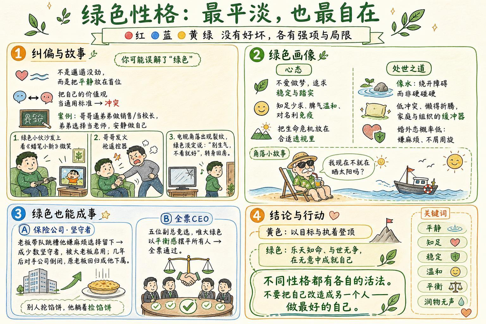
乐嘉纠正了听友对绿色性格的负面看法，指出红蓝黄绿无好坏，每种都有强项和局限。他分享了自己弟弟的绿色性格例子：弟弟大学毕业当老师，不争辩不进取，乐嘉曾气得砸电视，弟弟却淡然回应。乐嘉后来意识到自己用红+黄的价值观强加于人。绿色性格平淡知足，如海滩晒太阳的老汉，不追求名利，婚外恋概率最低。绿色也有成就：一位超级绿色学员因留守公司成为少数坚守者，最终被大老板启用；另一家公司的绿色副总因平衡感全票当选CEO。结论是绿色靠乐天知命无意中成功，不同性格都能成为高手。
📖 全文解读（点开看全文）
有听友听完上一讲后得出"绿色稀里糊涂、邋遢没劲、不招人待见"的结论。乐嘉纠正：这说明你还没真懂——红蓝黄绿没有好坏，每种都有强项和局限。他坦言自己当年也看绿色不顺眼，典型就是他弟弟。 弟弟（绿色）大学物理毕业找工作，乐嘉劝他做销售锻炼，弟弟不争辩"哥我知道了"，却暗度陈仓去当了老师；乐嘉又逼他定目标当校长，弟弟说"我这样教书挺好的"。有天乐嘉下班回家，看见弟弟一个人看动画片《蜡笔小新》傻笑，气得骂他不上进、不进修电脑外语，越骂弟弟越不吭声，乐嘉抓起遥控器把电视砸碎；弟弟面不改色只说"哥你发那么大火干嘛，不看就不看呗"，转身回房休息，留乐嘉自己扫地。妈妈还说怀弟弟时几乎没胎动、一度怀疑是死胎——典型绿色。多年后研究性格色彩，乐嘉才意识到当年错了：他一直把自己（爱做梦的红+想实现梦想的黄）的价值观当普世标准强加给弟弟。 绿色是最平淡、最不愿做梦的性格。海滩晒太阳的老汉：你劝他打鱼挣钱买更大的船最后好享受阳光，他说"我现在不就已经在晒太阳了吗"。村上春树幻想带双胞胎女友赴宴——那是红色的梦；绿色觉得周旋于几个女人太麻烦、不屑去搞，所以婚外恋里绿色概率最低。绿色优点是把生命危机放在适当透视下，知足、没脾气、对生命要求不多，不被名利金钱诱惑，最终拥有平淡从容；像水一样绕过障碍而非铲除障碍，温柔的吸引力让他成为家庭与组织的一笔财富——古人"天地与我并生、物物而不物于物"就是绿色境界。 绿色就没有世俗成就吗？不同性格对成功定义不同（绿色认为平静即成功），但绿色一样能成事：乐嘉一位学员是超级绿色，进保险公司后老板带队跳槽他嫌麻烦、情况没那么坏就留下，结果成了少数坚守者、被大老板启用，几年后跳出去的公司倒闭、原老板回来成了他的下属——别人跳出去抢馅饼，他躺着捡馅饼。另一家公司五位副总选CEO，其余四人都带黄色、互相会反弹，唯独那位大绿色因平衡感能摆平所有人，全票通过。 结论：黄色靠对目标的坚定执着登上巅峰，绿色靠乐天知命、与世无争，在无意中成就了自己。天下每个人都有自己的活法，不只有你的活法最好。不同性格都能成为武林高手，只是门派不同——**不要试图把自己改造成另一个人，你只需做最好的自己。**
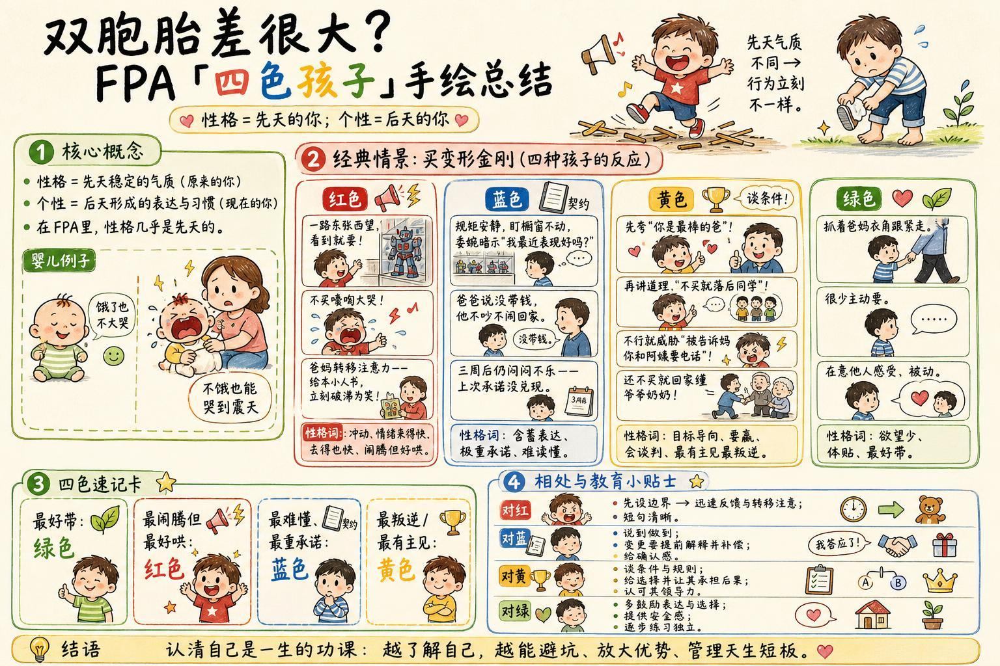
乐嘉用双胞胎踩甘蔗皮的例子引出性格与个性的区别：性格是先天的，个性是后天的。他以婴儿要奶为例，绿色饿了不哭不叫，黄色刚吃完也能哭得惊天动地，因为天生知道哭是控制大人的武器。接着用四色孩子买变形金刚的场景说明：红色孩子情绪来得快去得也快，看到就要，不买就哭，但一本小人书就能哄好；蓝色孩子含蓄暗示，极重承诺，若父母失约会上黑名单；黄色孩子软硬兼施，必须买到，从小懂如何达成目标；绿色孩子被动、欲望少、最好带。最后总结：最好带的是绿色，最叛逆的是黄色，最难懂的是蓝色，最闹腾但最好哄的是红色。性格在小时候就彰显，环境会影响个性，认清自己是一生的功课。
📖 全文解读（点开看全文）
有人问：双胞胎同父同母，为什么差别那么大？踩甘蔗皮：红色哥哥兴奋地又蹦又跳踩垃圾，蓝色弟弟却挽起裤脚、踮脚皱眉小心绕过、还找干净地方搓脚。乐嘉借此引出两个词：**性格=先天的你（原来的你），个性=后天的你（现在的你）**。在 FPA 里性格几乎都是先天的——婴儿要奶就有差别：绿色饿了也不哭不叫；黄色刚吃完不饿也能哭得惊天动地、持久不停，因为他天生就知道"哭"是控制大人的武器。 经典的"四色孩子买变形金刚"： ①**红色**：路上东张西望，看到就要、不买就嚎啕大哭，老爸一走偷看一眼继续哭，发现没用就追上去；回家妈妈给本小人书立刻破涕为笑——情绪来得快去得也快。 ②**蓝色**：中规中矩，看到喜欢却不说，盯着橱窗不动，暗示"爸爸你觉得我最近表现好吗？表现好的孩子是不是该有奖励"；老爸没带钱，他不吵不闹回家，三周后却闷闷不乐——因为上次某个承诺没兑现。蓝色孩子用含蓄暗示表达想法，**极重承诺**：你失约一次，就上他的黑名单（红色妈妈答应考90分去迪士尼却忘了，孩子从此不再信她）。 ③**黄色**：领着老爸走，先灌迷魂汤"你是全世界最好的爸"，再讲道理"同学人手一个"，不行就威胁"我告诉妈你跟陌生阿姨要电话"，软硬兼施；还不买就回家缠爷爷奶奶——目的就是必须买到，哭也会哭到山崩地裂为止。黄色从小不用训练就懂如何达成目标、取得胜利。 ④**绿色**：紧抓父母衣角，走到哪跟到哪，看到玩具父母不提他也很少主动要，关照别人感受、欲望少、被动——最好养最好带。 所以四种孩子：**最好带=绿色，最叛逆最有主见=黄色，最难懂=蓝色，最闹腾但最好哄=红色**。性格在很小时就彰显无遗，乖不乖、好不好动、爱不爱表达，都是性格在起决定作用。长大后环境、教育、身边最亲近人的性格会影响个性发展，让我们越来越不认识自己——**认清自己是每个人一生的功课**：越清楚自己是谁，越能避免不必要的麻烦和代价，更好发挥优势、管住天生的短板。
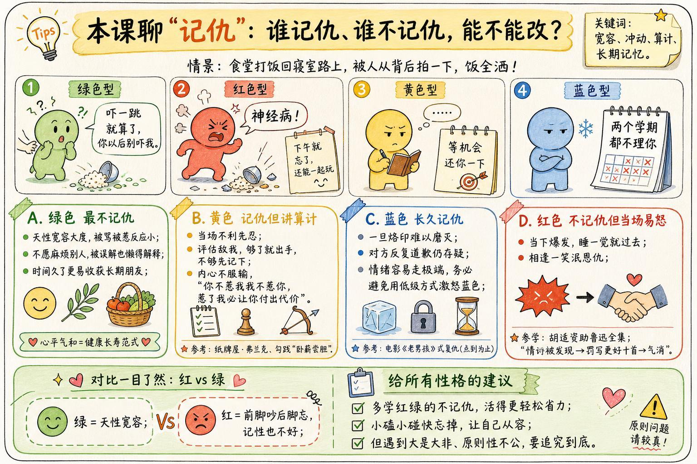
乐嘉用食堂打饭场景区分四色：绿色被吓后只说“以后别吓我”；红色当场臭骂但下午就忘；黄色当下不说话，下午以牙还牙；蓝色可能两个学期不理你。绿色最不记仇，举广东108岁老太太林长好为例，她欠钱不还、被红卫兵折腾后仍乐呵呵买菜。黄色记仇，当场不发作，等机会反击，如《纸牌屋》弗兰克和勾践。蓝色记仇难磨灭，如《老男孩》李有贞关押男主15年并使其乱伦后自杀。红色不记仇，当下暴怒但很快忘记，如胡适帮鲁迅遗孀出全集。结论：红绿不记仇但本质不同，绿色宽容，红色健忘；建议学红绿不记仇，但大是大非要追究。
📖 全文解读（点开看全文）
本课聊"记仇"：什么性格记仇、什么不记仇，记仇能不能改。乐嘉先用一个场景快速区分四色——在食堂打饭回寝室路上，有人恶作剧从背后拍你一下、饭全打翻：**绿色**吓一跳也就算了"你以后别吓我"；**红色**当场跳脚臭骂"神经病"，但当天下午就忘、照样一起玩；**黄色**当下不说话，下午趁你不注意也拍你一下吓你"每个人都要为自己的错误付出代价，以其人之道还治其人之身"；**蓝色**可能接下来两个学期都不理你，因为觉得你玩笑太过分。 四色记仇方式： - **绿色最不记仇**：宽容大度，你骂他惹他都没大反应。广东江门108岁老太太林长好，邻居说她长寿就因"心地善良、不争强、不好胜、不记仇"——欠她钱不还她想"人家可能有困难"，文革折腾过她的红卫兵后来在小区卖菜,她照样乐呵呵该买就买。绿色自己有难不愿麻烦别人、被误解也懒得解释，时间久了别人反而愿与他做长久朋友。 - **黄色记仇**：当场不发作只因当下对自己不利，先记着等机会反击（如《纸牌屋》弗兰克的连环复仇、勾践卧薪尝胆）。他能评估敌我实力：够了就出招，不够先记下以后再报，内心不服输。"你不惹我我不惹你，惹了我必让你付出沉重代价。" - **蓝色记仇**：一旦烙在心里很难磨灭，对方反复道歉他也怀疑。韩国电影《老男孩》李有贞（蓝色）为姐姐的事种下复仇火焰，把男主关押15年、再用催眠让他与亲生女儿乱伦——只为让对方尝尽自己当年的痛，达成后自杀。所以千万别用低级方式惹怒蓝色。 - **红色不记仇**：当下暴怒恨不得掐死对方，睡一觉就过去了，"相逢一笑泯恩仇"。胡适（红色）当年被鲁迅骂得够呛，鲁迅死后许广平没钱出全集，找到胡适，胡适一口答应、出钱帮忙。又如朋友被妻子发现给前女友写的情诗，妻子罚他三年写十首更好的，写完气也消了。 结论：红、绿都不太记仇，但本质不同——绿色是天性宽容大度，红色是"前脚吵后脚忘、记性也不好"。乐嘉建议无论什么性格，都不妨多学红绿的不记仇，因为最终轻松得意的是自己，比黄蓝活得省力；冤冤相报何时了。小磕小碰忘掉为好，让自己从容；但若是大是大非、原则性的不公，还是应该追究到底。
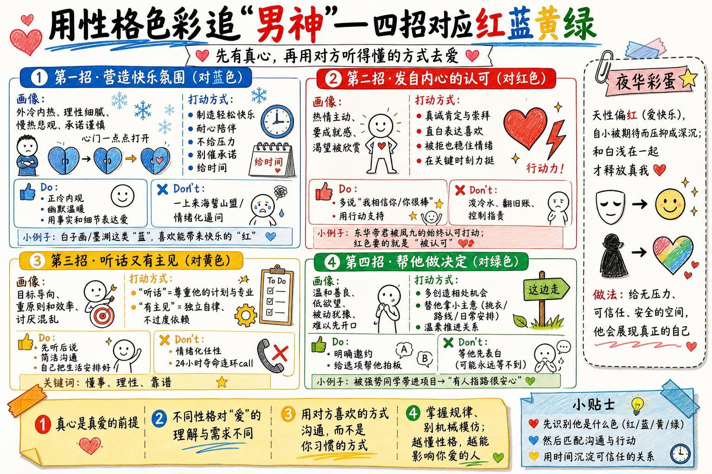
本段主讲人用性格色彩理论讲解如何吸引不同性格的男神，分为四招：第一招营造快乐氛围针对蓝色性格，以《花千骨》白子画和《三生三世》墨渊为例，蓝色外表孤高内心深情，需要红色性格的快乐来打开心门，现实中有乐嘉团队红色女老师与蓝色老公的例子。第二招发自内心的认可针对红色性格，以东华帝君为例，红色需要被认可和崇拜，乐嘉一位红色学员因后来的女孩无比崇拜他而四个月谈婚论嫁。第三招听话又有主见针对黄色性格，黄色男人看重懂事，需要既听话又有独立性的伴侣。第四招帮他做决定针对绿色性格，绿色被动缺主见，需要主动帮他拿主意，如乐嘉公司绿色同事被强势女生支配后幸福在一起。最后以夜华为例，说明压抑天性的人需要安全空间释放真实自我。核心强调真爱需用适合对方的方式沟通，读懂性格才能影响对方。
📖 全文解读（点开看全文）
本课讲女生如何用性格色彩吸引不同性格的"男神"，四招对应红蓝黄绿： **第一招·营造快乐氛围（对蓝色）**：《花千骨》白子画、《三生三世》墨渊都是蓝色——外表孤高冷漠、内心深情却不善言表；他们爱上的花千骨、撕音都是能随时制造快乐的红色。蓝色心门是一点点打开的，别指望一下海誓山盟（那对蓝色太草率肤浅），要给足够时间。现实里红蓝搭配很多：乐嘉团队一位红色女老师，老公（蓝色）多年后才说当初爱她是因为她遇事总能积极乐观，而这正是天性悲观的蓝色不具备、最渴望的。 **第二招·发自内心的认可（对红色）**：东华帝君其实是红色（只因当神仙太久、地位太高才显霸气，独处时古灵精怪爱捉弄凤九）。凤九打动他，靠的是从头到尾始终认可、喜欢、热爱并单纯表达，被拒绝受伤也不发飙、不责怪，一听他有难就去帮。乐嘉一位红色学员，前女友家境好却总发大小姐脾气而分手；后来的女孩条件差很多却无比崇拜他、在她眼里他永远最好，四个月就谈婚论嫁——红色要的就是被认可。 **第三招·听话又有主见（对黄色）**：玄幻剧里黄色主角很少（多在反派，如擎苍）。喜欢黄色男人就做"既听话又有主见"的女人——"听话"指别情绪化任性、要倾听尊重他的想法；"有主见"指有独立性、有自己见解、别过度依赖，他忙起来顾不上你时你也能把生活安排好，别24小时夺命连环call。乐嘉采访的黄色学员择偶最看重"懂事"：该听话时听话、该独立时独立。 **第四招·帮他做决定（对绿色）**：绿色主角也极少（欲望太低、没人推就不主动），如姜子牙奉师命下山、在渭水等人来找。绿色情感里特别被动、缺主见（如元稹屡被陷害不知所措）。喜欢绿色男人，千万别等他主动表白（永远等不到），要多制造在一起的机会、帮他拿主意（陪他挑衣服、给生活建议）。乐嘉公司一位绿色同事，研究生时被高一级的强势女生使唤进项目组、被支配也不抗拒、还觉得"有人告诉我往哪走"很开心，最后幸福在一起。 **夜华彩蛋**：夜华天性本是红色（追求快乐），但从小被天君寄予厚望、被迫放弃玩乐苦练仙法，长大穿黑衣显深沉，那是天性被压抑的表现；只有和白浅在一起才无拘无束释放真情、做回真正的自己。遇到这样的人，要用性格色彩理解他真正的内心，给他没有压力、充满安全感和信任的空间，他才会释放最真实的自己。 **核心（重点）**：很多人以为感情只要有真爱就够了，但世上有真爱却走不到一起的无数——因为你不懂用适合对方的方式沟通、读不懂对方、不去满足对方的心理需求，只用"自己爱的方式"去对待别人，分手后又归咎于没缘分、归咎于对方，从不检讨自己。所以：①爱情的前提是发自内心的真心真情；②不同性格对爱的理解和需求方式不同，你越读懂性格（掌握规律而非机械模仿），就越能真正影响你爱的人。
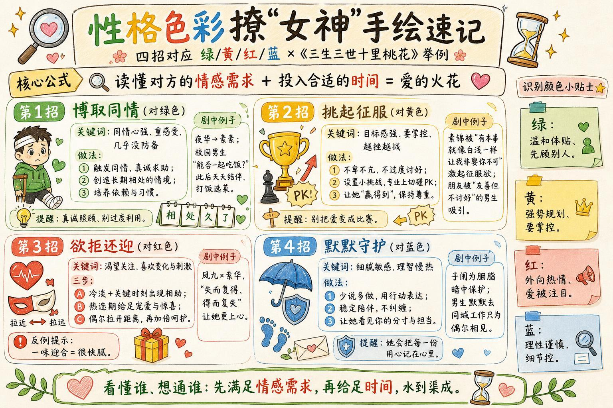
主讲人用《三生三世十里桃花》四位女神举例，讲解如何用性格色彩追不同性格的女生。对绿色（素素）用博取同情，如夜华装受伤倒在门口，或乐嘉学员当年装外地人没人一起吃饭，天天陪女生吃饭形成习惯。对黄色（素锦）用挑起征服，如夜华说“有本事你就像白浅一样让我非娶你不可”，或一位黄色女性因老公不讨好她、专业上常PK而选中他。对红色（凤九）用欲拒还迎，如东华先冷淡后热恋再冷淡，让凤九沦陷；反例是男生百依百顺反被嫌没意思。对蓝色（胭脂）用默默守护，如子阑暗中保护、炼丹受伤也不说，或一位蓝色女友因男生默默去她城市找工作而被打动。最后强调核心是读懂对方情感需求并满足，加上时间。
📖 全文解读（点开看全文）
本课讲男生如何用性格色彩追不同性格的"女神"，借《三生三世十里桃花》四位女神举例，四招对应绿黄红蓝： **第一招·博取同情（对绿色）**：夜华追素素，用"装受伤倒在她门口"，素素见他浑身是血心软扶进门疗伤，他赖着不走、日久生情就成了。绿色（素素）同情心强、关注别人感受、即便对方不好也替人找理由，毫无防备。追绿色女生可勾起她的同情、营造长时间相处、让她对你产生依赖与习惯，习惯一旦形成她就希望你留在身边。乐嘉一位绿色学员，老公当年在校园装"外地来的没人一起吃饭、能不能坐你旁边"，之后天天一起吃饭、帮她选菜打饭，时间久了自然在一起。 **第二招·挑起征服（对黄色）**：反派素锦死心塌地爱不爱她的夜华，是被一句话刺激——夜华说"有本事你就像白浅一样让我非娶你不可"。黄色（素锦）目标感、控制欲强，越被打击越要战胜对方，无形中把爱情当竞赛（结局很惨）。追黄色女生可以不那么热情、小小挑战她、勾起征服欲。一位黄色女性朋友选中的老公，正因为他不像其他人那样讨好她，而是像朋友般友善、没有非分之想、专业上还常和她PK，挑起了她的兴趣，最后被她"拿下"（其实那男生本就喜欢她）。 **第三招·欲拒还迎（对红色）**：凤九被东华所救后想报恩、越陷越深；东华"欲拒还迎"反而极大加深了她的情感。三阶段：①冷淡（说不用报恩、让她回去），但每次她遇险又及时出现救她，让她捉摸不定、越发上心；②下凡历劫两人以凡人身份热恋，让她过足被宠的瘾；③回神仙身份后又恢复冷淡，凤九彻底沦陷。红色（凤九）渴望关注，被小小忽略就不甘心、更想被注目，"失而复得、得而复失"最刺激。追红色女生要给关注、也要不时有小变化，偶尔忽略一下再加倍呵护，感觉更强烈。反例：一个男生对红色女友死心塌地、她说啥就啥，女友却嫌"在一起没意思"主动分手——红色需要变化和刺激，一成不变会腻。 **第四招·默默守护（对蓝色）**：子阑爱翼族胭脂却因族规不能在一起，便默默暗中保护、从不表白；炼丹救她侄女受了重内伤也不说，默默离开。胭脂（蓝色）细腻敏感，全都体会在心、非君不嫁。追蓝色女生无须多说，用"做"让她体会即可，她会把你的一点一滴记在心里；她很理智、不死缠烂打，你也不必纠缠，靠彼此的体察与默契。一位蓝色女友美貌追求者众，工作调到外地时，唯有一个男生什么都没说、默默也去那城市找了份工作只为偶尔见她，这份不张扬的深沉付出打动了她。 **核心**：不管"撩"男神女神，首先都是**读懂对方的情感需求、满足它，再加上或长或短的时间**，自然碰撞出爱的火花——看谁看懂，想谁想通。
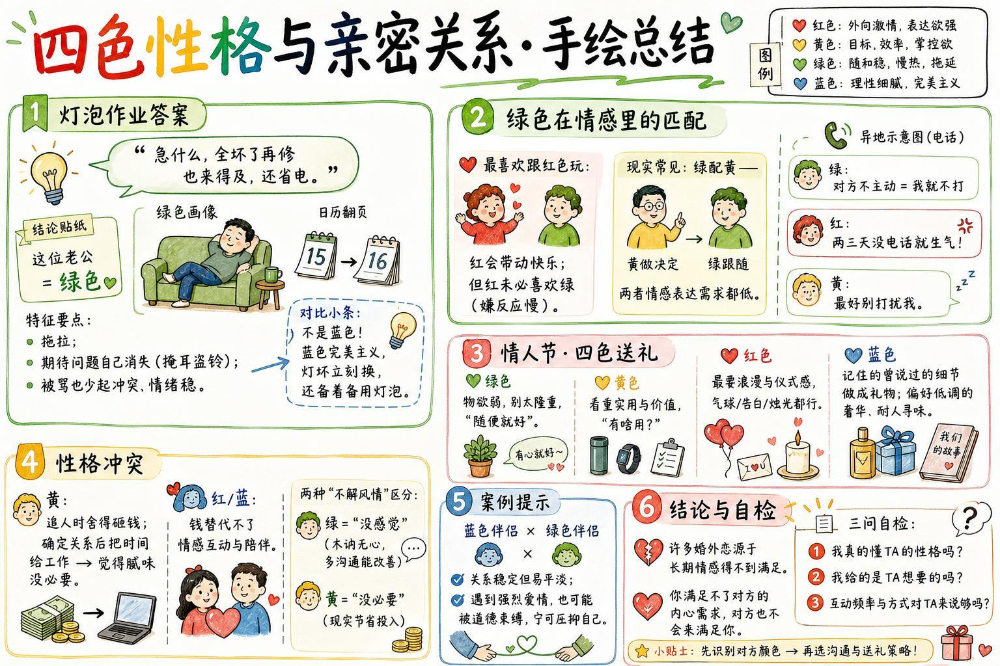
主讲人先纠正上节课作业答案：一位红加黄性子急的妻子换灯泡时骂老公拖拉，老公却说不急，全坏了再修省电。有人答蓝色，但蓝色高度完美主义，看到坏灯泡会比妻子还难受，早换好了。这位老公的特点是拖拉、期待问题自动解决、找借口不吵架，所以是绿色。接着讲绿色在情感中宜配谁：绿色最喜欢红色，因为红色有快乐感染力，但红色未必喜欢绿色（嫌木讷）。现实中绿配黄概率高，黄色有掌控欲，绿色愿跟随，且两者对情感需求都不强。举例：热恋时绿色出差，对方不主动就能几周不打电话；对象若是红色会生气，黄色则相安无事。然后讲四色送礼之道：绿色物欲最弱，最好打发；黄色看重实用价值；红色浪漫度需求最高，送什么不重要，重要的是感受存在；蓝色极其在乎对方说过的话，偏爱低调有内涵的礼物。最后引出性格冲突：黄色追人时砸钱，关系确定后觉得不如工作；红蓝认为情感互动最重要。区分两种不解风情：绿色是没感觉，黄色是没必要。引用《廊桥遗梦》中蓝色女人嫁绿色男人，婚姻稳定却平淡无爱。点题：婚外恋源于情感长期得不到满足，满足不了别人内心需求，别人也不会满足你。
📖 全文解读（点开看全文）
先公布上节灯泡作业答案：那位红加黄、性子急的妻子，灯泡坏了催老公一直不动、坏到第三个自己换还边骂，老公却说"急什么，全坏了再修也来得及，还省点电"。有人答"蓝色"（因为他会讲道理分析），错。**典型蓝色高度完美主义，看到一个灯泡坏会比你还难受、你没提他早换好了**（乐嘉父亲就是蓝色，装灯时就预备好备用灯泡）。这位老公的特点是：①拖拉；②期待问题自动解决（掩耳盗铃）；③最后找借口但不跟你吵——不管你怎么骂都不生气。所以他是**绿色**。若你答了绿色以外的颜色，说明学习才刚开始。 再答另一题——**绿色在情感里宜配谁**：绿色最喜欢跟**红色**玩，因为绿色自己没有让自己开心的能力，红色有快乐感染力能带动他；但红色未必喜欢绿色（嫌绿色木讷、反应慢、不解风情、没共鸣没激情）。现实里**绿配黄**概率很高：黄色有强烈的掌控/改造欲、爱替人做决定，绿色啥决定都不愿做、愿意跟随，一个支配一个跟随挺合适；而且黄绿两色对情感、内心感受的需求都不强，都不唧唧歪歪。例：热恋时一方出差，绿色只要对方不主动就能几周不打电话（觉得打电话是麻烦人）；可对象若是红色，等两三天没电话就会很生气（"你不给我打=不在乎我"）；若是黄色则"只要别打扰我最好"，相安无事。 **四色送礼之道**（这集恰逢情人节）： - **绿色**：物欲最弱、不把礼物和情感强连接，最好打发、最好相处、不作不闹——是最容易"麻糊"过去的性格。 - **黄色**：看重**实用与价值**，不喜花花草草虚的东西，"你花三小时画幅画不如买个包"；口头禅"这东西有啥用？"。 - **红色**：**浪漫度需求最高**——情人晚餐、气球彩蛋、大屏幕表白，唯恐天下不知；对红色来说每天都是情人节，送什么不重要，重要的是"你让我感受到我的存在"。 - **蓝色**：情感需求也高，**极其在乎你曾说过的每句话**；若能把他无意提过的一句话做成礼物，最能代表你的在意；不喜花哨炫耀，偏爱"低调的奢华"、有内涵、耐人寻味。 由此引出性格冲突：黄色追人时不惜砸钱，一旦关系确定就觉得"不如把时间花在工作赚钱上、何必瞎腻味"；而红蓝这类情感需求高的人认为"钱解决不了一切，情感互动交流最重要，你连说话的时间都没有就跟行尸走肉一样"。注意区分两种"不解风情"：**绿色是"没感觉"（木讷无心，多沟通能改善），黄色是"没必要"（觉得浪费时间、很现实，一旦得手就不愿投入）**。《廊桥遗梦》里蓝色女人嫁了绿色好男人，婚姻稳定却平淡无爱，遇到摄影师爆发强烈爱情，却因道德束缚宁愿一辈子痛苦也走不出那一步。 最后点题：很多婚外恋源于情感长期得不到满足——红色女人哭，黄色丈夫只会说"怎么了我帮你解决，解决完我走了"，而她要的是有人耐心倾听；需求长期落空，另一个给予关心呵护的人出现就足以摧毁原有关系。**你满足不了别人的内心需求，别人也不会来满足你**。所以：你真知道别人需要什么吗？你给的是他想要的吗？不了解性格，就会付出代价。
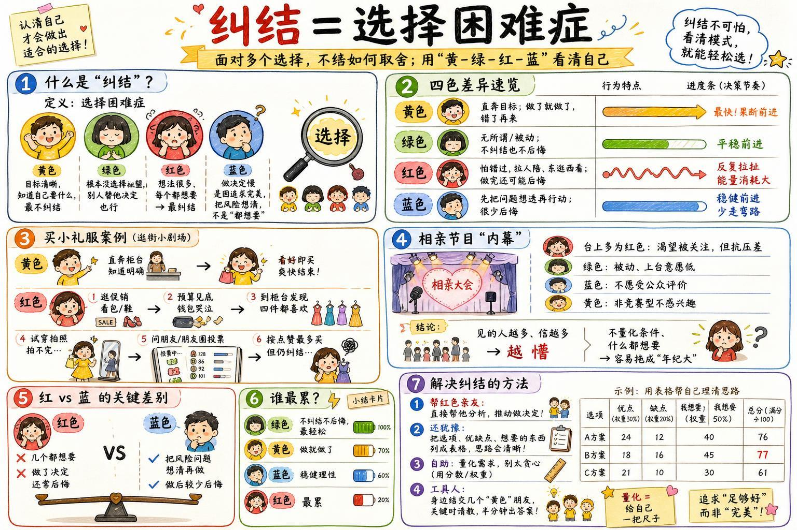
主讲人分析纠结的本质是选择困难症，指出黄色最不纠结，目标明确；绿色不是纠结，而是根本不做选择，巴不得别人替他决定；红色最纠结，什么都想要，比如买小礼服时试穿拍照发朋友圈投票，选了还后悔。蓝色做决定慢但非纠结，因追求完美。解决纠结的方法：对红色亲友直接推动他做决定，或让他列表理清思维；红色自己要量化需求、别太贪心。乐嘉自己纠结时，会找黄色朋友征求意见，半分钟就能得到答案。
📖 全文解读（点开看全文）
本课讲"纠结"。纠结的本质就是**选择困难症**——面对多个选择不知如何取舍（择偶、跳槽、留学去美国还是英国、选专业…）。 **黄色最不纠结**：目标明确，知道自己要什么。**绿色容易被误判为纠结，其实不是**——绿色根本不做选择、连做选择的欲望都没有，巴不得别人替他决定（动脑太麻烦），而且对他来说去A去B、吃青菜吃萝卜没本质差别、根本不在意。纠结者的特点恰恰相反：**想法很多，却不知哪个最好**。 **红色才是最纠结的**。买小礼服为例：黄色直奔柜台、看好就买、不需人陪；红色却要拉人陪（不爱孤独），一路逛促销、包、鞋，三千预算还没到礼服柜台就花光了只能刷卡，到了发现四件都喜欢、预算只够一件——于是每件都试穿拍照、问朋友、还发朋友圈让大家投票，按点赞最多的买。红色"这件有这件的好、那件有那件的好"，什么都想要反而选不出。 **非诚勿扰内幕**：什么性格会上电视相亲？绿色被动没欲望、蓝色最不愿抛头露面（觉得置于公众评价下很危险很傻）、黄色除非是能赢的竞赛否则也无兴趣（李宇春就是典型黄色——不露声色、内心坚定、有大将风范）。所以女嘉宾**以红色为主**：渴望展现、渴望成为关注焦点（被议论、收到信很快乐，江湖称"想出名"，其实是"渴望被关注"的极端表现）。但红色抗压差，出名要承受诋毁打击易情绪化。红色在台上站越久、见的优秀男人越多、求爱信越多，反而越懵、越不知道要找什么——内心想要的太多，什么都想后来拥有，结果做不出选择。很多大龄单身不是找不到，是可选太多、又不肯量化条件、活在感觉里、什么都想要，就这样拖下来。 **蓝色容易被误会成纠结**：他做决定慢，是因为追求完美、把所有风险和问题考虑仔细、确保没问题才行动——但他不是"几个都想要"。和红色的关键差别：红色几样都想要，而且**做了决定还会后悔**（"我当初要是选那个该多好"），所以红色不仅纠结、还活在后悔里。 对比下来：绿色一不纠结二不后悔、最不累；黄色做了就做了、错了再来；最累的反而是红色。 **解决纠结的方法**：①对红色亲友，直接帮他分析、推动他做决定就行；②若还唧唧歪歪，让他把所有想法、各选项的优缺点、想要的东西列成表格，理清思维就会越来越清晰；③红色自己要**量化**自己想要的东西、**别太贪心**。乐嘉自己也是纠结的人，他的招数是在身边交几个黄色性格的朋友，纠结时去征求意见，对方往往半分钟就帮他分析出答案——近朱者赤，身边有不同颜色的朋友，在关键时刻各有用处。
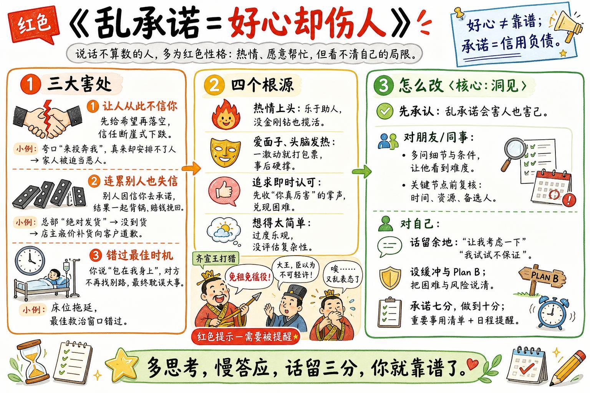
主讲人指出，说话不算数的人多为红色性格，他们好心但看不清自身局限，造成不良后果。不靠谱有三大害处：一是让人不再信任，例如外地人在北京吹牛说乡亲可投奔，结果公司用不了人，自己逃避，让老婆当恶人；二是连累他人失信，如店主信了总部发货承诺而答应客户，结果总部没发货，只能高价买类似品并道歉；三是错过最佳时机，如有人承诺帮找医院床位，结果没办成，导致父亲未能及时住院而去世。爱乱承诺的根源包括热情、爱面子、需要即时认可和想得太简单，齐宣王乱表态免租免徭役是例子。解决方法是洞见问题，多问问题让对方意识到难度，说话留有余地，答应七分做到十分。
📖 全文解读（点开看全文）
说话不算数的人，绝大多数是**红色**——他们其实是好心人，乐于承诺、愿主动帮人，只是看不清自己性格的局限，造成谁都不愿见到的局面；更麻烦的是很多人没意识到自己爱承诺的毛病，还觉得"没做到至于发那么大火吗"，因为他不知道后果有多严重。 **不靠谱的三大害处**： ①**让人从此不信你**：你的承诺让我一开始充满欣喜，最终落空就重重打击我、从此不敢信你。例：外地人在北京吹牛说自己多成功"你们来投奔我"，乡亲真来了，他那小公司根本用不了人，他又逃避不敢面对，只能让老婆出面当恶人，结果老婆被全乡说成小气恶毒——都是他当初吹牛造的孽。 ②**连累你也失信于人**：我因为信你的承诺，又据此答应了别人，你食言导致我也成了说话不算数的人。例：客户预定手链、坐两小时车来取，店主信了总部"绝对能发货"就答应客户，结果前一晚发现总部没发货，只能高价四处买类似的、向客户解释求谅解，亏钱也认。 ③**错过解决的最佳时机**：你答应帮我，我就不再找别人，结果你没办成、时机已过、后果不可挽回。例：老爸生病急需床位，有人拍胸脯"院主任是我朋友，包在我身上"，你就不再找别的路子，最后他各种理由搪塞没办成，其他路也来不及，老爸没能及时住院而提前离世。受害越大越痛恨当初答应的人——"你做不到为什么要答应？你以为在帮我，其实在害我"。 **爱乱承诺的四个根源**：①**热情**——红色最热情、乐于助人、自告奋勇，常没有金刚钻也揽瓷器活；②**头脑发热爱面子**——一激动什么包票都敢打，事后发现没那么简单，但为面子只能硬撑；③**需要即时认可、快乐透支**——他要的是承诺当下被夸"你真厉害"的感觉，把喜悦透支在前面，而不在乎事成后真正的认可（预期吊太高，别人失望越大）；④**把问题想得太简单**——天性太乐观，没考虑事情背后的复杂性，还说得夸张，一拍脑门脱口而出（与蓝色"全想清楚才说"正相反）。齐宣王打猎一高兴就乱表态免租、免徭役，被秋老一点醒"国库空虚、官府没劳力"，他连说"讲得好，请您做丞相"，话出口又给自己一耳光"又乱表态了"。 **解决**：核心是**洞见**——先意识到自己的性格可能给自己和他人带来的危害，认同有问题才谈得上改。对不靠谱的朋友：多问他问题、让他意识到难度，他承诺时就会有所节制；事到之前反复提醒（红色需要被提醒）。红色对自己：**说话留有余地、给自己缓冲"让我考虑一下"、答应七分做到十分**（最怕答应十分只做到五分）。一句话——**多思考，慢答应，说话留三分**，你就会变成一个靠谱的人。
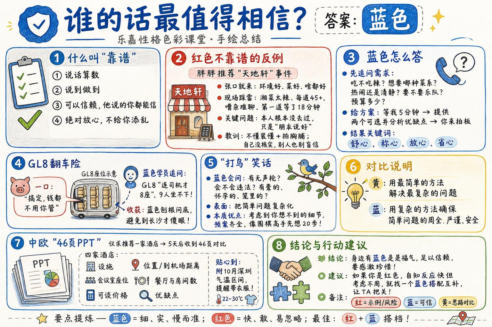
乐嘉认为，判断一个人是否可信，关键在于其性格色彩。蓝色性格的人最值得信赖，因为他们会考虑所有细节，确保周全。他举了多个例子：红色朋友胖胖推荐没去过的饭店，导致乐嘉用餐体验极差；而蓝色会先问清需求再给出选择。另一个例子是租车时红色朋友说搞定，但蓝色追问发现座位不够。蓝色就像打鸟笑话中的学生，把简单问题复杂化，但正因如此，他们能预见到所有细节，让人放心。乐嘉还提到中欧校友会案例，蓝色同事提交了46页PPT，包含酒店对比和深圳十月气温，而红色做不到。最后他建议红色性格的人要找蓝色朋友互补。
📖 全文解读（点开看全文）
乐嘉对"靠谱"的理解有四条：①说话算数；②不仅算数，而且说到做到；③可以信赖，他说的话你都能信；④绝对放心，不会给你添乱。本课重点：什么人说的话最值得相信、最可信赖——答案是**蓝色**。 **反例（红色不可信的细节）**：90年代乐嘉在上海，有朋友来出差想去新天地，他打电话问红色朋友"胖胖"推荐饭店。胖胖张口就来"天地轩，环境好、菜好、什么都好"，把它夸成天上人间。结果去了发现是湘菜馆、辣得吃不了、每道菜45元以上（他月薪不到三千）、人多到没法说话、等第一道菜18分钟。一问才知胖胖自己根本没去过，只是"我朋友去过说好"。红色的不靠谱在于：把自己不知道的事说得熟门熟路；而乐嘉的傻在于没求证细节就信了。 **对比（蓝色怎么答）**：若胖胖是蓝色，会先问一串——你朋友吃不吃辣？想吃什么菜系？要热闹还是清静？要不要乐队？预算多少？问得你嫌烦，但他最后会说"等我五分钟，给你两个选择并分析差别让你选"，让你舒心、称心、放心、省心。 **GL8 例子**：九人去长沙租车，红色"小猪"办事极快，一口"搞定！钱都不用你管"，但被蓝色学员追问才露馅——他说的别克GL8其实连司机才8座，坐不下9个真正乘客。幸亏学员是蓝色刨根问底；若也是红色信了，到长沙就傻眼、事全毁。 **打鸟笑话**：树上十只鸟打死一只还剩几只？蓝色学生一路追问（无声枪吗？打鸟犯不犯法？有没有聋的、笼里的、怀孕的、残疾的鸟…）把老师问到晕倒——这就是蓝色"把简单问题复杂化"。但反过来，**蓝色也是最让人放心的人**：他能考虑到你想不到的所有细节、并在你想到之前就摆平，像围棋高手落子前已想清未来20步、备好所有预案。 **黄色对比**：黄色最大特点是"用最简单的方法解决最复杂的问题"，而蓝色是"用复杂的方法确保简单问题的周全严谨安全"。 **中欧46页PPT**：2003年中欧要在深圳办校友会，上海红色项目负责人菲菲只想让深圳蓝色同事推荐一家酒店，五天后却收到一份46页PPT：四家酒店的设施、位置、离机场距离、会议中心座位、餐厅房间数、可谈到的价格、各自优缺点一清二楚，最后竟还附上当年十月深圳的气温区间，方便通知学员带什么衣服。红色打死也做不到这么细。 **结论**：身边有蓝色朋友是福气、足以信赖，要感激珍惜；如果你是红色、清楚自己反应太快、考虑不周全，就一定要在身边找一个蓝色来搭配互补、补平短板（红色天性很难训练出这种周全，除非有人常提醒，实在不行就找蓝色朋友）。
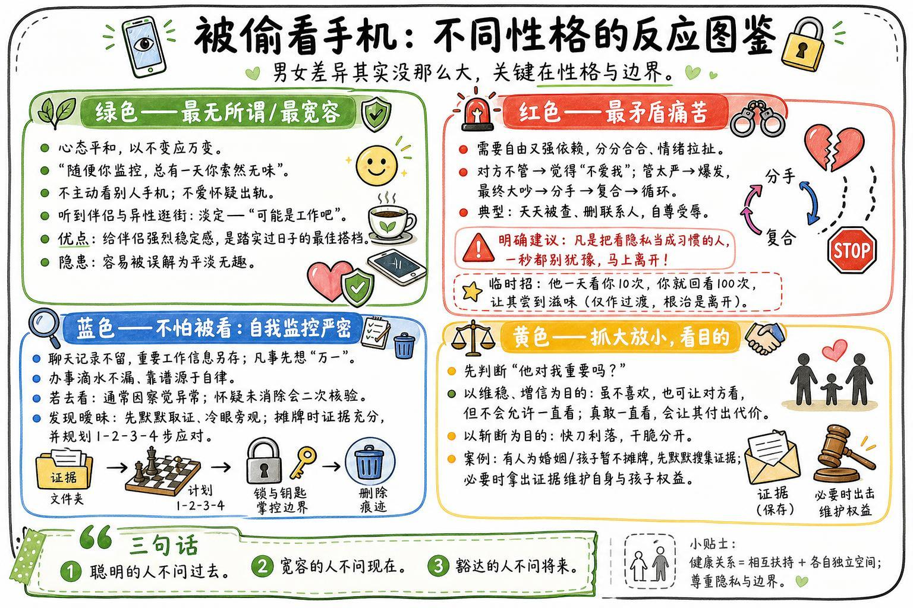
主讲人分析不同性格被偷看手机的反应：绿色最无所谓，心态平和，从不主动看别人手机；红色最矛盾痛苦，既追求自由又情感依赖，容易陷入分手复合循环，乐嘉建议遇到把看隐私当习惯的人应立即离开；蓝色不怕被看，因平时就自我监控严密，若真去看必是察觉异常并会暗中收集证据；黄色抓大放小，看对方是否重要，如希拉里为政治同盟忍受克林顿出轨，或为儿子隐忍外遇丈夫并提前搜证；绿色最宽容，从不怀疑出轨，即使闺蜜告知也淡定。最后引用三句话：聪明的男人女人不问过去，宽容的男人女人不问现在，豁达的男人女人不问将来。
📖 全文解读（点开看全文）
本课讲"被偷看手机"——不同性格反应完全不同（男女差异其实没那么大）。 **绿色最无所谓**：心态平和、以不变应万变——"随便你监控，总有一天你索然无味"，从不主动看别人手机。 **红色最矛盾痛苦**：一封读者来信很典型——男友交往后天天查她手机微信QQ、删掉他认为不该联系的人（连男客户也删），三年没查出问题仍每天必查，她痛恨觉得被侮辱人格，当面反查他他却不在乎"你心里没鬼怕什么查"，她想分手又觉得他爱自己舍不得。这就是红色：一方面要自由空间，一方面情感上强烈依赖、心软，于是分了又合、来回循环。红色：对方不管你→觉得"他不爱我"；对方监控太严→追求自由信任被打击又爆发，两种心态打架，最后大吵→分手→复合→万劫不复。乐嘉的明确建议：**凡是把看隐私当成习惯的人，一秒都别犹豫马上离开**——健康的关系既相互扶持又各有独立空间，一个想完全占有你、与你合二为一的人是可怕的（那是畸形的爱）；缺安全感又极度控制欲的人很恐怖。临时招：他一天看你十次，你就看他一百次，变本加厉让他尝味道。 **蓝色不怕被看**：问蓝色"老公看你聊天记录怎么办"，她想半天说"这不太可能发生——我QQ/短信从不保存，看完就删，要留的工作信息另存"。蓝色凡事想到"万一"，在别人监控之前就已"挥刀自宫"、自我监控比谁都严密、滴水不漏——这正是蓝色办事靠谱的原因。但若蓝色真去看，一定是察觉对方有异常；怀疑没消除就会看第二次；发现暧昧短信也不质问、冷眼旁观；等到摊牌时已握足证据、并把对方的反应及后面第二三四五步全想好了。 **黄色抓大放小、看目的**：黄色女生答"先看这男人对我重要不重要——快谈婚论嫁就给他看以增进信任（虽不喜欢），但他也未必敢一直看；真敢一直看就吃不了兜着走"。黄色做不做取决于目的：目的是维稳就忍辱负重，目的是斩断就快刀利落。希拉里面对克林顿与莱温斯基事件，再痛苦也理性选择维持婚姻和政治同盟（为日后竞选）——幸亏她是黄色，若是红色可能对媒体发飙说错话。又如一位黄色朋友发现老公外遇，先默默搜齐证据却不摊牌——"为了儿子不离婚；将来他若提离婚，我把证据拿出来让全世界知道是他的错、争我的权益、让儿子向着我"。 **绿色最宽容**：从不看手机、不主动怀疑出轨，闺蜜说"看到你老公和别的女人逛商场"他也淡定"可能在陪客户吧"，不给自己添堵。坏处是让对方觉得平淡无激情，好处是让伴侣觉得婚姻无比稳定、是踏实过日子的最佳搭档；对方在外动静太大时，最宽容不计较的也是绿色。 结尾三句话：**聪明的男人女人不问过去，宽容的男人女人不问现在，豁达的男人女人不问将来。**
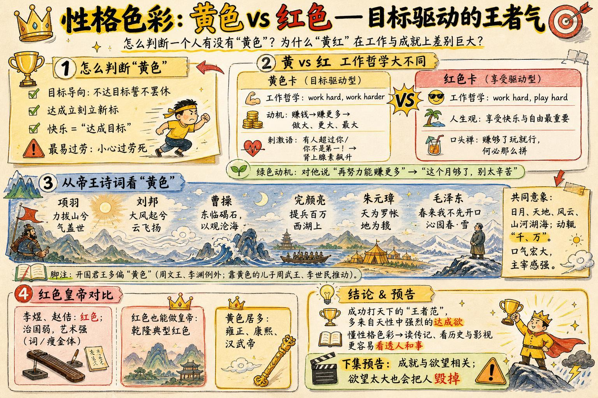
主讲人通过对比黄红工作哲学、列举帝王诗词，说明黄色性格以目标和结果为导向，追求成就无止境。红色是work hard, play hard，黄色是work hard, work harder，最容易过劳死。激励黄色要说“有人比你做得好”，对绿色说“再努力能赚更多”则无效。主讲人朗诵了项羽、刘邦、曹操、李世民、武则天、赵匡胤、完颜亮、朱元璋、袁世凯、毛泽东等开国帝王的诗词，指出共同点是爱用日月、天地、风云、山河湖海等宏大意象，数量用千、万，口气巨大、有主宰感。中国开国君王几乎都是黄色，例外如周文王、唐高祖是靠黄色儿子推动。红色皇帝如李煜、宋徽宗治国不行但艺术成就高；乾隆是红色，雍正、康熙、汉武帝是黄色。成功打天下的人骨子里就有强烈达成目标的愿望，而非后天学来。
📖 全文解读（点开看全文）
怎么判断一个人有没有黄色？黄色以目标和结果为导向、不达目标誓不罢休，而且达成目标后会立刻立新目标——他全部的快乐就是"达成目标"。 **黄红工作哲学对比**：红色是 work hard, play hard（努力工作，更努力地玩）——人生享受快乐和自由最重要，"赚够了玩就行，何必那么拼"；黄色是 work hard, work harder（努力工作，更努力地工作）——赚钱是为了赚更多的钱，做大、更大、最大，征服战胜做大是人生最大意义。所以**最容易过劳死的是黄色**。激励也不同：对黄色说"有人比你做得好、你不是第一"，肾上腺素立刻飙起；对绿色说"再努力能赚更多"，他会说"这个月赚的够用了，何必那么辛苦"。 **从帝王诗词看黄色**：古今中外的商业领袖、政治人物多是黄色，因为对成就无止境的追求。乐嘉朗诵了一串开国帝王的诗——项羽"力拔山兮气盖世"、刘邦"大风起兮云飞扬…安得猛士兮守四方"、曹操"东临碣石，以观沧海…日月之行若出其中"、李世民、武则天、赵匡胤、完颜亮"提兵百万西湖上，立马吴山第一峰"、朱元璋"天为罗帐地为毯，日月星辰伴我眠"、袁世凯、毛泽东（17岁《咏蛙》"春来我不先开口，哪个虫儿敢作声"、《沁园春·雪》点评秦皇汉武）。共同特点：爱用**日月、天地、风云、山河湖海**，数量动不动**千、万**，口气巨大、气魄恢弘、有主宰尘世之感。中国历史上开国君王几乎都是黄色（除周文王姬昌、唐高祖李渊——他俩是靠黄色的儿子周武王、李世民在背后推动才成事）。 **红色皇帝对比**：南唐后主李煜、宋徽宗赵佶都是红色，治国不行、国破家亡，但李煜以词传世、宋徽宗以瘦金体书法名世——不同性格擅长不同的事。红色也能做皇帝（乾隆就是典型红色皇帝），而雍正、康熙、汉武帝则黄色居多。 结论：成功打天下、有王者风范的人，绝不是靠后天读"成功学"练出来的，而是骨子里天性就有强烈达成目标的巨大愿望。懂了性格色彩，你再看人物传记、历史小说、影视剧，就会发现不同性格的人做同一件事反应完全不同，很多原来看不懂的人和事，瞬间"看谁看懂、想谁想通"。下集预告：成就与欲望有关，但欲望太大也会把人毁掉。
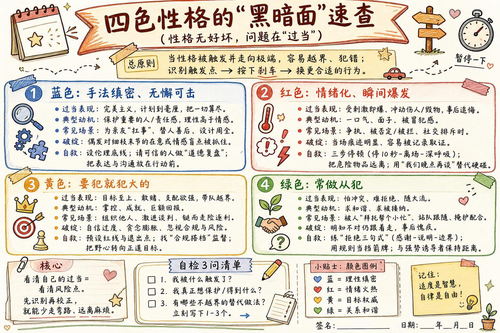
乐嘉在本课讲述四色性格的黑暗面，即性格过当可能导致的犯罪。蓝色性格犯罪手法缜密，如《嫌疑人X的献身》的石神设计完美诡计帮暗恋对象脱罪，或《越狱》的Michael周密计划救兄；乐嘉的派出所所长学员举例，一对男女死于煤气和安眠药，现场干净无证据，是蓝色所为。红色性格因情绪化瞬间爆发犯罪，如女子因朋友没叫她吃饭就烧车，或过安检被拦就划伤安检员。黄色性格目标感强，要犯就犯大案，如张子强绑架李泽钜并勒索10.38亿港币。绿色性格常做从犯，因不愿拒绝，如小学三年级女孩被同学逼偷铅笔，明知不对仍顺从。最后强调，不了解性格过当会导致人生错误甚至犯罪。
📖 全文解读（点开看全文）
本课聊四色性格的"黑暗面"——什么性格在什么情况下会犯罪、为了什么犯罪（性格无好坏，这里讲的是性格"过当"）。 **蓝色：手法缜密、无懈可击**。东野圭吾《嫌疑人X的献身》男主石神是数学天才、典型蓝色：暗恋邻居单身母亲静子却从不表白，静子失手杀了前夫，他设计天衣无缝的局帮母女脱罪、甚至自首把罪揽到自己身上。作者自评"这是最好的诡计、最纯粹的爱情"——懂性格色彩就知道：缜密诡计=蓝色思维，默默不表达只用行动传达的爱=蓝色情感方式。破绽是他偶然在意了一下外貌（蓝色平时只重内涵），被同样蓝色的同学汤川察觉。《越狱》Michael 也是蓝色——把监狱下水道构造纹进身上、每步计划都在心里，原动力是救唯一的亲人哥哥。乐嘉一位做派出所所长的学员说，最难破的案子几乎都是蓝色干的：一对分手男女死于煤气+安眠药，现场打扫得干干净净、聊天记录清空、无任何凭证、还摆着合影——蓝色即便犯罪也细腻到让你无懈可击。 **红色：情绪化、瞬间爆发**。红色最大问题是情绪化，犯罪多是当下情绪推动的瞬间爆发，常产生自己都意想不到的后果。例：女子因朋友几次吃饭没叫她，买20块汽油烧了朋友的车；女子过安检被拦，一怒挥陶瓷刀划伤安检员缝十几针。红色真爆发时很吓人。 **黄色：要犯就犯大的**。黄色天生强烈的目标感、执行力、权威霸气，在正义组织里是英雄领袖，在邪恶环境里就是犯罪团伙头目。香港"世纪贼王"张子强绑架李嘉诚之子李泽钜，单枪匹马到李家谈判拿走10.38亿港币；李嘉诚劝他拿钱买长实股票、别走这条路，他不听，胆子越来越大最终落网。 **绿色：常做从犯**。绿色追求和谐，多作为配合犯罪的从犯出现——因为他不愿得罪人、不会拒绝。例：一位老师的绿色女儿（小学三年级）跟同学去超市，同学逼她偷铅笔，她死活不肯、被逼"哦好吧"就拿了一支；问她知不知道不对，她说"知道，可是他们让我拿的"。绿色不愿拒绝、不愿伤害别人感受，就这样被带着走。 **核心**：很多人不了解自己的性格、没能力正视自己的缺点，对性格"过当"视而不见或逃避，于是在生活工作中犯下不该犯的错、甚至误入歧途、走上犯罪让自己和亲人陷入悲痛。用性格色彩看清自己的过当，就能在人生路上避开很多不必要的麻烦、让人生更顺畅。
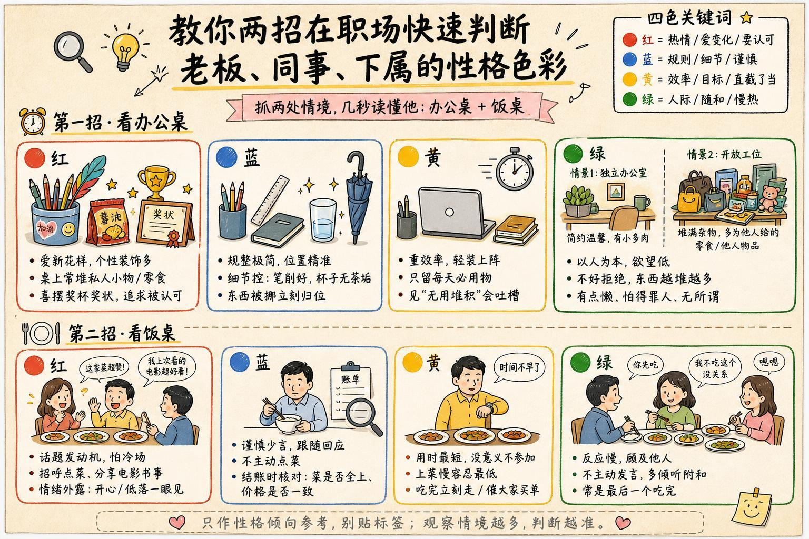
主讲人教了两招在职场快速判断性格色彩的方法。第一招看办公桌：红色喜欢在桌上搞新花样、堆个人物品，职位高的会摆奖杯；蓝色桌面整齐简约，物品位置精确，注重细节，比如铅笔削好、水杯无茶垢；黄色桌上东西很少，只放必需品，追求效率，批判性强；绿色以人际为导向，独立办公室简约温馨，开放空间东西越堆越多，多为别人的东西，懒得处理。第二招看饭桌：红色活跃、怕冷场，主动招呼和分享，但心情不好时沉默低落；蓝色谨慎少言，不主动点菜，但会核对账单；黄色讨厌浪费时间，没意义饭局不参加，吃完先走，对上菜慢容忍度低；绿色磨叽，因看重人际而让菜，被动回应，常最后一个吃完。
📖 全文解读（点开看全文）
教你两招在职场快速判断老板、同事、下属的性格色彩。 **第一招·看办公桌**： - **红色**：不喜欢一成不变，爱在能支配的地方搞新花样；桌上堆满个人物品（小女生常堆零食），即便公司要求也要插支彩色羽毛笔、贴徽章凸显与众不同；职位高、有大办公桌的，最可能摆自己的奖杯奖状——因为对红色来说，再没有比得到他人认可称赞更爽的事。 - **蓝色**：注重规则秩序，桌面整齐简约；物品位置极精确，你挪一下他立刻发现并物归原位；重视细节——铅笔削好、圆珠笔一定有水、水杯喝完马上洗不留茶垢。例：下大雨，红色到处借伞，蓝色同事借出一把"用了十年却像新的、每道折痕一尘不染"的伞，红色都不敢要。 - **黄色**：重效率、抓大放小，桌上东西很少，只放每天必用的（电脑、笔筒、个别文件），最大程度降低干扰、专心快速做事；批判性强，看到同事桌上一堆没用的东西很不认可——黄色随时处于战斗状态，轻装上阵最重要。 - **绿色**：以人际为导向、欲望低；有独立办公室时桌面简约温馨（放盆小多肉）；但和大家在开放空间共用时，桌上东西会越堆越多——而那些大多不是他自己的：别人发的吃的他不好意思拒绝放到发霉也懒得扔，红色东西放不下堆到他桌上他也不提醒、任人占据空间。这就是绿色的懒+不愿得罪人+无所谓。 **第二招·看饭桌**： - **红色**：多数时候很活跃，主动发起话题、最怕冷场，热心招呼、倒水、推荐招牌菜、分享电影书和家事，天生爱讲故事是饭桌主角；但心情不好时会异常沉默低落——红色喜形于色，开不开心一眼看得出。 - **蓝色**：谨慎、少言寡语，多是跟着话题做必要回应；不会主动揽点菜的活（考虑太多）；但用餐结束没人提醒，他会主动拿账单核对每道菜是否都上了、价格和菜单是否一致、有无算错——有个蓝色朋友是安全感的保障。 - **黄色**：饭桌上待的时间最短，讨厌浪费时间，没意义的饭局绝不参加（除非有重要人物）；吃完拍屁股先走，或催大家买单、或借口有工作先撤；对"上菜慢"的容忍度全色最低（曾见黄色因米饭上太慢、桌上已有两个菜也不管就走了）。 - **绿色**：以磨叽闻名——反应慢+看重人际更慢；好吃的菜大家都伸筷子，他想"这么多人想吃，我等等再夹"；红色好心夹了他不爱吃的菜，他为照顾对方感受也忍着慢慢吃完；聊天不主动发言但会聆听，冷场时随口附和一下。一来二去，绿色往往是最后一个吃完的人。
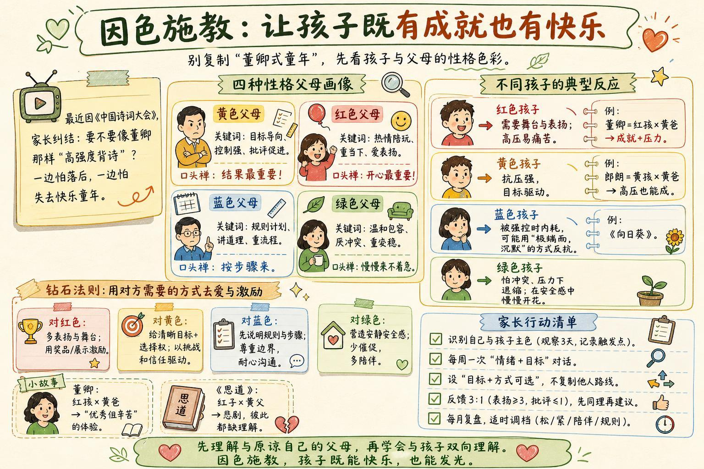
乐嘉以董卿的成长为例，分析虎妈狼爸教育法对不同性格孩子的效果。董卿的父亲是黄色性格，严厉控制，逼她抄书、跑步、勤工俭学，导致董卿童年自卑痛苦，但董卿成年后感激父亲。乐嘉指出，黄色性格的教育方式对黄色性格的孩子（如郎朗）有效，郎朗在父亲逼迫下成为钢琴家且不痛苦；但对蓝色性格的孩子可能造成极端反抗，如电影《向日葵》中儿子用炸手方式反抗父亲逼他画画。乐嘉强调因色施教，红色性格孩子需要表扬鼓励，如他同事蒋佳琪因父母假意买画而激励成为绘画冠军。最后，乐嘉呼吁理解父母，避免像朝鲜思道太子与英祖的悲剧。
📖 全文解读（点开看全文）
甘乐嘉学性格色彩，让你看谁看懂，想谁想通。我是乐嘉，愿你用性格色彩的力量使自己的生命更美好。最近一段时间，朋友圈的画风突变，关心家长里短八卦的人变少了。我发现很多人开始对中国诗词大会产生了浓厚的兴趣，结果在节目上面看到主持人董卿像开了挂一般。绝不逊色于任何一个选手，对唐诗宋词信手拈来，没有任何提词器和所有人的互动，张口就是诗，闭口就是词。董卿火了以后，所有网络上铺天盖地都在宣传她的帖子。所以很多爹娘都可以让自己家的孩子背诗，希望他们长大以后都可以抚有诗书气自华，变成像董卿那样的人，一开口就是成串的诗词儿。不行，你们家的小孩一天背三首，我们家一天要背五首。可没过多久，你发现网上又来了另外的一个帖子，告诉所有天下的家长，不能在看到董卿辉煌的时候，忘记掉他的悲惨的没有办法玩乐的童年，不能因为做爹娘的期望而毁掉你自己孩子的一生，而董卿的成功仅仅只是个个案而已。这回好了，所有的大人们又慌了，不让小孩背诗吧，怕他长大了以后落后于其他人，让他背吧，怕他没有一个快乐的童年，长大以后被孩子恨，又想严格又不想做恶魔，到底该怎么办？那些网络上面支持成为董卿那样的人，绝大多数可能就是这样教育孩子的父母，或者因为他们的爹娘这么教育他们自己，她成才了。所以她的论据就是你看董卿在台上这么棒，就是因为她小时候刻苦。而网络上有另外一批反对成为董卿的人，绝大多数可能就是从小因为这种教育模式受到伤害，所以就把董卿的老底儿给扒了出来，告诉所有的人董卿的童年有多么的悲惨。她爹他娘是复旦大学的高材生，他读书的时候是被他爸威逼利诱，学习成绩必须要好。因为她爸喜欢文科，所以就让他抄书，大段大段的抄成语，管你懂不懂，必须得不停的抄。然后寒暑假的时候必须勤工俭学，天不亮就开始在马路上开始跑步，不让老婆给他做新衣服。所以小时候的董卿在同学面前特别的自卑，而且他爸爸特别喜欢当众数落他，你哪里做的不好，什么事儿不对啊，问题在哪儿？吃相难看。所以有一次在节目访谈的时候，董卿自己就跟主持人讲，我爸是一个特别严厉的爸爸，他用了三个特别，别人都难以想象。我经常觉得我好像就是跟那个反正我觉得不是我爸亲生的。他说出来了那些天底下反对成为董卿的那些朋友们感同身受的观点，成为董卿和不要成为董卿这两方的观点。在拉锯战的过程当中，有很多年轻的父母就开始晕了，不知道应该往哪个方向走了。可是如果你稍微了解一点性格色彩的话，从董卿的案例里面你就可以发现，她爹就是一位黄色性格特别重的家长。黄色性格的家长有改造欲，有控制欲，倾向于用直截了当的方式让自己的孩子往他们所认为好的方面去发展，不认可、不表扬，坚定的认为人只有批评和给予压力才可以进步。不关照孩子的感受，一定要让孩子做他自己认为对的东西。可红色辛格的父母不会这样，就像虎妈猫爸这部电视剧里面的那个爸爸罗素很有童心，会跟小孩趴在地上一起去玩积木。而且看到电视里面好玩的事情。会跟他一起来玩，会扮演大马，扮演小狗，只要孩子开心就好了。反正红色的爸妈特别受到孩子的欢迎，和孩子互动性也特别强。反正以后的事儿以后再说呗。人生最重要的就是当下的快乐，孩子长大了总有办法活下来，指不定还有什么好事等着我孩子呢？干嘛现在搞得这么累啊。相比较红色性格父母的快乐和相对比较散漫的教育风格，蓝色性格的父母规划性极强。穿什么颜色的衣服，牙刷怎么摆放，他都有自己的规矩。如果小孩不遵守自己的规矩和计划，记住他不仅要目标，还要每一步的过程都要跟他一样。但是他不会像黄色的那个父母那样直接批判，他会晓之以理，动之以情，慢慢给你磨，磨到你最后屈服。而绿色性格的父母，他们的特点是，一方面他们会为孩子营造一种宁静的安详的气氛，孩子要玩儿就去玩儿，一会儿再吃饭没关系，考试没及格也不发脾气，被人欺负了就会告诉孩子吃亏是福没关系，没有挫折教育也没有规矩的约束，然后呢，让孩子有一个温顺的童年。这就解释了为什么在绿色性格爹娘下成长的孩子是压力感最低的。这个世界上，不同性格的父母教育的方法不一样，放在孩子的身上就会有完全不同的效果。以董卿为例，董卿的性格是红色性格，她不喜欢巨大的压力在天性当中，所以当她黄色性格的爹给她巨大压迫感的时候，她就会陷入到痛苦当中，可是如果董卿是黄色性格，那就另当别论了，这里面最典型的代表就是郎朗，如果你看过电视上采访郎朗和他爹，你就会发现郎朗他爹也是标准的黄色，跟董卿他爹的性格一样。郎朗不好好弹钢琴，就拿皮带抽，直到抽断了为止。从小以目标为导向，可是郎朗本人他自己的抗压力非常强。老爸，你越逼迫我练，那我就一定要把这个琴给练好。在这条道路上一直前进，他并没有像董卿所描述的内心的这种痛苦。可是你想过没有，如果这一招用在蓝色性格的小孩身上，会有什么情况呢？我建议你去看一部电影，几年前我看了以后触动极深，叫向日葵。这是一个文艺片，不过真的很好看，我建议你去看。简单来讲，这个爹希望成为画家，文化大革命梦想破灭。后来他就把所有的梦想转嫁在儿子身上，希望儿子实现，就逼着她小孩从小到大必须努力的画画。可是她儿子根本不喜欢画画，他爸就用各种各样的方法，一定要画。这个小孩是蓝色的。反抗无果。终于有一天在国庆节上街游行的时候，跟着游行队伍向前走，儿子手里面捏了一个二踢脚的大鞭炮，鞭炮点燃了以后，死死的捏在手中，绝不放手。最后鞭炮把手。擦掉了一半，鲜血直流，血肉横飞，但是那个小孩却露出了微笑的神情，因为他用这样的方法终于可以不再画画了。所以你发现没有当蓝色星格内心深处想要反抗的时候，她用的是这样的默默无闻但是却又极端的方式来表达对你爹娘试图控制我人生的强烈的愤慨的反抗。当你了解了不同性格的父母教育的方式和不同性格的孩子的反应以后，问题现在来了，到底爹娘应该使用什么样的教育方法呢？到底他用的方法怎么样是对，怎么样是错呢？而如果我们的父母用的是错误的方法教育我们，我们是不是应该恨他们呢？我能够理解，有的时候你可能对你的父母有恨，但是我想讲，你未必真正的理解他们。如果我们的父母这辈，他们早早知道因人而异，因色施教，不同性格的孩子教育的方法不一样，他们也许就可以知道怎么样子让孩子能够快乐的成功的变成董卿，但是又保有快乐的童年。我有一个学生是典型的红色性格，我今天想特别向各位报告一件事情，绝不是只有打压和批判才能够成功。对于红色性格来讲，她喜欢的是表扬和鼓励。我这个学生特别喜欢画画，有一次心血来潮画了一副挂历，他爹娘就说，我槽好看到可以去卖钱了。第二天老爸老妈就从兜里面掏出十块钱，告诉那个孩子说这个挂历已经被单位里面的一个阿姨看中，而且收购了。结果小孩特别兴奋，她得到了口头和金钱的双重激励，就开始拼命划划，拼命画划，一连气画了十多副，全部都交给她。父母挣了很多钱。长大以后他才知道，那些挂历一件都没有卖出去，都是他爹娘藏起来以后掏了钱给了这个孩子。可正因为这个孩子全身心的投入到了画画当中，因为她得到了巨大的激励，最终在小学五年级的时候拿到了澳大利亚举办的全球少儿水彩画大赛的金奖，也是唯一一名来自中国的小朋友。那个时候他们没有学过性格色彩，但是他无形当中他已经运用了性格色彩的钻石法则，就是用适合这个孩子的方法去激励他。所以这个孩子从小到大都是感激他这个父母，因为她拥有了一个特别快乐的童年。这个人就是我办公室里面的蒋佳琪，他是在超级演说家第二季我团队里面的队员。你也可以在电视上面，视频里面搜索到他当年的演讲。她每次跟我讲起这个故事，对她的父母都充满了感恩。在网络上面还有另外一种声音，很多人会批判董卿的爹和董卿的娘，说他们对孩子实在是太苦了。但是我想讲，董卿的内心深处，在她站在中央电视台那一刻开始起，特别感激她爹娘。因为她不仅理解了父亲当年多么的艰辛，然后他也明白了父亲这么做是因为父亲希望他能够养成吃苦耐劳的习惯，能够拥有面对生活困难和挫折对抗的信心和勇气。可是还是有很多人会有恨，并非所有人都能够原谅父母。有一个电影名字叫做思道，这是朝鲜王国历史上真实发生的悲剧。朝鲜国的第21代的皇帝叫英祖，英祖他是一个望子成龙的父亲，对他自己唯一的儿子思道从小就用精英方式培养非常严格。可是这个思道太子就是一个小燕子一样的红色性格的小孩，最后这种非常严苛的方式把这个孩子给惹怒了。造反失败以后，国王就把他关在米柜里面，关了五天活活饿死。饿死以后，这个当爹的国王自己也痛苦不堪。我现在要把在临死前这父子两个人说的一段对话讲给你听，让你知道他们内心真实的想法。这个老爹说我40岁了才老来得子，你知道我有多开心吗？从两岁的时候开始，我就让你接受帝王教育。但小时候的你，你玩刀剑，你画画偷懒，你不学习的时候，我觉得天都快要塌下来了。我为了让你成为一个好的皇帝，我才对你这么严厉的。可是每次你犯错，你知道我对你有多担心。儿子说，我知道我知道这些，我才努力会去理解你，可你这种强求的做法让我窒息，我无法忍受。学习有那么重要吗？爸爸，穿衣着装就有那么重要吗？爸爸，如果一国之君不好好学习，就算是既歪了一个裤脚，将来也会被他的臣子所轻视。爸，我不喜欢当王，我也不喜欢权谋，我希望能够过我自己的人生。我要的只是你一个温柔的眼神和对我亲切的一句话罢。Thank titrage St' cent cent全。他说完这句话，儿子就咽气了。这个黄色性格的老国王在黑夜当中对着自己儿子的尸体一动不动。皇宫之中大家勾心斗角，老皇帝没有办法理解儿子的感受，他只能用他希望的那种冷酷的方式逼迫儿子变得强大。可红色性格的儿子不能理解黄色老爹的做法，只是希望老爹可以多多表扬他和能够给他一个小小的微笑。但遗憾的是两个人都没有学过性格色彩，理解的太晚了，早就没有回天之力了。所以在你开始让你的孩子正确成长之前，我的朋友，请你先理解和原谅你的爹娘。因为如果你不能理解你爹娘对你教育的方式是对还是错，你将没有办法用正确的方法去引导你的孩子。学会理解会让我们少掉很多痛苦，会让我们知道人生下一步该如何正确的行走。你完全可以用正确的方法来做到董卿已经做到的那些事儿。如果你觉得今天这期节目还有一点用，因为今天这期节目是我录到现在为止最长的一集。我觉得这些内容对于为人父母和即将为人父母和在父母的阴影下生活的非常痛苦的朋友们都会有用。如果你觉得可以帮助到你周围身边的朋友，你可以点击一下角的分享给朋友听，让更多的人因为性格色彩而受益。我也期待在我分享性格色彩的过程当中能够帮到你我期待着有一天可以与你相遇，我们下期节目再见。
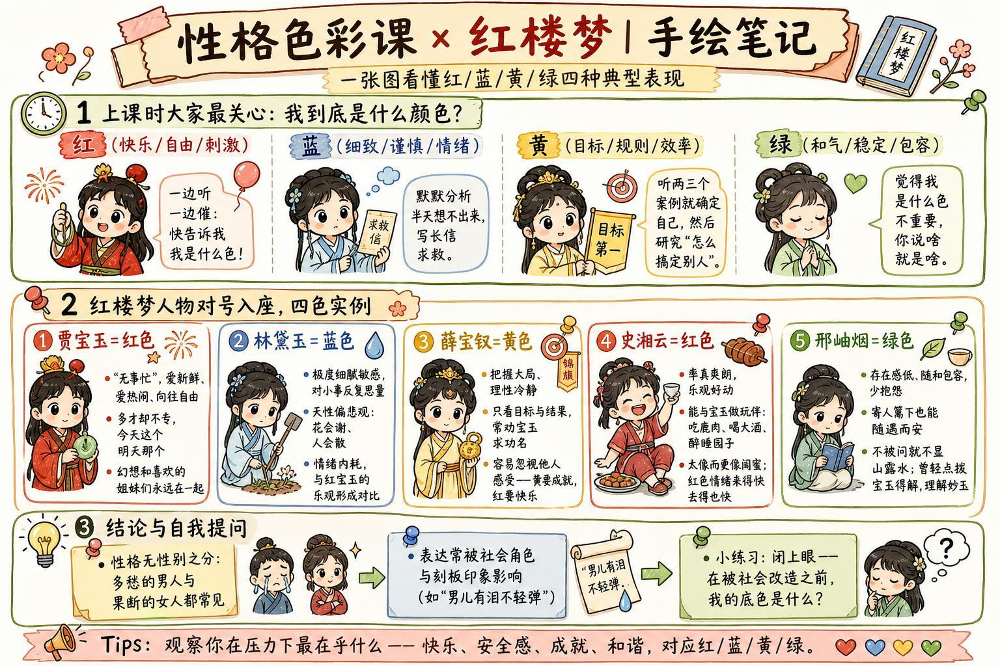
主讲人用《红楼梦》人物对应四种性格色彩：红色贾宝玉（热爱自由、兴趣广泛、爱热闹）、蓝色林黛玉（细腻敏感、悲观、心事重重）、黄色薛宝钗（理性冷静、目标导向、不重感受）、红色史湘云（率真爽朗、乐观好动）、绿色邢岫烟（存在感低、随遇而安、才华不外露）。通过对比宝钗和黛玉对宝玉的不同态度，说明黄色重成就、红色重快乐；并指出性格色彩不分性别，社会刻板印象压抑了真实自我。
📖 全文解读（点开看全文）
大家听课时最关心的永远是"我到底是什么颜色"，而四色的反应也不同：红色一边听一边急着问"快告诉我我是什么色"；蓝色默默分析半天想不出来写长信求救；黄色听两三个案例就确定自己、然后全部精力转向"怎么搞定别人"；绿色想想觉得"我是什么色也不重要、你说我是啥就是啥"。本课用《红楼梦》经典人物对号入座。 - **贾宝玉=红色**：外号"无事忙"——喜欢新鲜、兴趣广泛、热爱自由、不受束缚，今天搞这明天弄那，才艺多却不专注；爱热闹，幻想和喜欢的姐妹们永远在一起、化灰也要在一处。 - **林黛玉=蓝色**：极度细腻敏感，对宝玉的一言一行乃至屁大的小事都反复思量、心事重重，把身心健康都搞坏；天性悲观——"既然花开了要谢，不如不开；人聚了要散，不如不聚"，扛着花锄葬花，沉浸在哀伤里。与乐观的红宝玉形成鲜明对比。 - **薛宝钗=黄色**：把握大局、审时度势、理性冷静；但只关注目标结果、不关注人的感受，所以很难理解红色宝玉的心理需求。宝玉爱黛玉不爱宝钗，关键在于宝钗总劝他求功名利禄（黄色认为人生取得成就最重要），黛玉从不劝（红色认为人生快乐最重要）——黄要成就，红要快乐。下人都觉得黛玉难搞、宝钗会做人气量大：因为黄色看重大事和结果、不在乎小事细节，蓝色却过不去小问题、情绪绕不过去。 - **史湘云=红色**：最率真爽朗，和宝玉很像，能做玩伴一起吃鹿肉喝大酒、醉了睡园子，大大咧咧乐观好动；正因太像反而没生出爱情，更像男女闺蜜。但他俩一起玩会让黛玉敏感吃醋耍小性子——红色追求快乐，很小的事就开心，也会因很小的事情绪剧烈波动。 - **邢岫烟=绿色**：存在感极低、容易被忽略——热闹场合只淡淡参与、不说出格话不做出格事；寄人篱下受冷落欺负也毫无怨言、随遇而安、包容性极强（把过冬棉衣当了换钱打点下人）。直到一次宝玉为妙玉的帖子苦思不得，路上邢岫烟轻轻一点拨他就找到答案，还发现她对常人难近的妙玉有很深理解，才惊觉她很有才华——绿色不显山不露水，不被问到、不被求助，就永远不会让人知道自己的才华和能力。 最后乐嘉强调：天下男女的性格色彩都是相通的，世上有多愁善感的男人，也有坚定果断的女人，只是社会给了男女不同的角色分工与刻板印象（"男儿有泪不轻弹"压抑了情绪，独立坚强的女人又被说"不像女人"）。希望你闭眼想想：在被社会改造之前，你本来的样子、最真实的你，到底是什么性格、什么颜色。
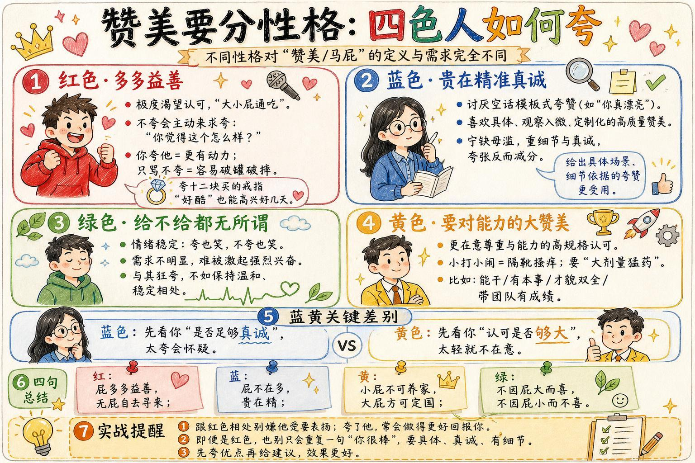
乐嘉指出，不同性格的人对赞美的需求不同。红色性格极度渴求认可，大小赞美通吃，甚至会主动讨要表扬，如乐嘉自嘲给朋友看新书时最想要读后感；齐宣王明知大臣拍马屁说弓有100斤（实际30斤）仍开心。蓝色性格排斥俗套赞美，需要精准真诚的定制夸奖，如夸人漂亮要具体到“和尚偷看舔嘴唇”。绿色性格无所谓，给不给都一笑而过。黄色性格在意对能力的认可，赞美要足够大，如夸黄色姑娘“漂亮”不如“能干”，甚至“和你同时代是男人的悲哀”。蓝黄关键差别：蓝色看真诚，黄色看大小。
📖 全文解读（点开看全文）
有人说"人人都需要赞美，卡耐基也说搞好人际就要多赞美"。但乐嘉提醒：不同性格对"赞美/马屁"的定义和需求完全不同。 **红色·多多益善**：极度渴求认可，且"大小屁通吃"——重大表扬开心，夸他十二块买的破戒指"魔戒好酷"也能高兴好几天；你不夸他，他还会主动凑过来"你觉得这个怎么样？"来讨表扬（乐嘉自嘲：给朋友看自己新书，最想要的就是对方分享读后感、夸哪里好，对方不说他就很不爽）。妈妈说他一句"老舅穿这衣服年轻25岁"，老舅接下来四个月天天穿那件。红色也最不吝啬赞美别人。齐宣王（大红色）拉30斤的弓，大臣拍马屁说"至少100斤"，他哈哈大笑"明知我30斤还拍，当我傻子，不过你们愿拍我也开心"。红色就是活在认可与赞美里的人。 **蓝色·贵在精准真诚**：最排斥俗套口头马屁，觉得"你真漂亮"这种通用赞美很敷衍甚至讨厌；但若你认真且具体——"刚才对面走过的和尚都偷看了你一眼还舔了舔嘴唇"——这种"专门定制"的高质量赞美他才受用。蓝色完美主义无处不在：马屁不在多，重在精准、有内涵、不腻、有嚼头。 **绿色·给不给都无所谓**：对一切永远无所谓，你夸他他嫣然一笑，你夸别人不夸他他也嫣然一笑——有也行没也行，不会像红色那样不给就不爽。所以让红色兴奋很容易，让绿色亢奋难如登天（绿色需求太不明显）。 **黄色·要对能力的大赞美**：更在意别人对他的尊重和能力的认可。赞美太浅等于隔靴搔痒，要用大剂量猛药。夸黄色姑娘"漂亮"不如"有才"，"有才"不如"能干"，再不如"才貌双全"、"和你同时代是男人的悲哀"。只夸漂亮他觉得低估自己（漂亮的人多了去）。 **蓝黄关键差别**：蓝色判断你"是否足够真诚"，太夸张反而怀疑不信任；黄色在意你给的认可"是否足够大"，太轻就根本不在意。 四句总结：**红色屁多多益善、无屁自去寻来；蓝色屁不在多、贵在精；黄色小屁不可养家、大屁方可定国；绿色不因屁大而喜、不因屁小而不喜。** 实战提醒：跟红色相处别嫌他老要表扬——你夸他、他做得更好来回报你；你只骂不夸，他就破罐破摔。但即便对爱赞美的红色，也别永远只会一句"你很棒"（重复也显敷衍），赞美要讲究具体方式方法。
乐嘉表妹因童年被强势男同学欺负，导致对强势老板恐惧，半年辞职三次。主讲人将强势分为冷酷无情型和暴躁型，本课讲前者。冷酷无情型对应黄色性格，只关注目标结果，不关心情感，如老板在聊天工具上只发一个“来”字，技术员就紧张。警示故事：一位黄色女老板培养女下属六年，下属却因长期压力辞职，坦言害怕变成老板那样，类似《穿Prada的女魔头》中米兰达。应对方法：汇报先说结果；被批评时不解释，先认错；提建议时按对方思路做方案，让他自己调整；精炼表达真实想法；不期待情感表扬。这些方法也适用于黄色性格的家人。
📖 全文解读（点开看全文）
乐嘉表妹半年辞职三次，原因都是"老板太强势、受不了"。根源是她小时候被强势男同学欺负过，骨子里恐惧强势的人——老板一强势批判，她大脑一片空白，只会逃跑。很多人搞不定强势的老板/伴侣/父母。要解决，先得搞清"强势"分两类：①冷酷无情型；②狂风暴雨、脾气暴躁型。两者内心和相处方法完全不同，用错方法适得其反。本课讲第一类。 **冷酷无情型 = 黄色性格**：不关注人的感受、只关心目标结果，平时没什么情感互动，开口直奔主题/结果、不问过程；你想法不同他直接打断、给结论让你照做。情感丰富的人遇到这种老板会很难过。例：某严肃冷酷的老板在内部聊天工具上给正在敲代码的技术员发了一个字"来"，技术员立刻条件反射"我哪里做错了"、胆战心惊爬上楼，老板面无表情说"我电脑中毒了"。跟黄色老板你会佩服他果断、决策快、能学到很多，但也活得小心翼翼很辛苦。 警示故事：一位黄色女老板极力培养一个女下属六年，给了最好的机会、工资、资源，但下属辞职时说真心话——"这六年每晚没睡好，你高跟鞋声一响我全身就绷紧；六年没休过一次假；老家亲戚去世我请假，你一句'人都死了去有啥用'怼回来；我走不是因为外面有更好的机会，而是怕有一天我会变成你这样的人"。如同《穿Prada的女魔头》里强势的米兰达——语速飞快、一进门连做十几个决策，助理安德里亚最终也选择离开。黄色老板让你成长，但很多人最终远离他。（那位女老板学了性格色彩后开始反省调整。） **应对黄色老板的招数（节选）**： ①黄色最恨浪费时间——汇报先讲**结果**，他有兴趣会问过程，不问就别说；带着未解决的问题就先给出你的**建议方案**让他拍板。 ②被他指出问题时**千万别解释**——解释会被当成没勇气认错的懦夫；即便他指责不全对，也先认下正确的部分、承诺马上改进。 ③想提建议、觉得他的决定不可行，**别直接否定**——按他的思路做出方案，告诉他这样操作会带来的严重后果，让他**自己**调整。 ④黄色会误以为"你不说=没什么可说"，所以别因胆小不敢表达——要训练自己**精炼简洁、心平气和、坚定地表达**真实想法。 ⑤别期待黄色给你大力表扬——他在工作上觉得你好就会委以重任，期待情感表扬是你自己想错了。 这些方法同样适用于黄色的老爸老妈、老公老婆。下一课讲更难搞的第二类——脾气暴躁、狂风暴雨型的强势老板。
乐嘉介绍了四色父母逼婚的态度和四色子女的反应，以及用钻石法则应对不同性格的父母。红色父母易焦虑但易安抚，可用幽默和礼物化解；蓝色父母讲道理但忧虑，需展示计划和合理性；黄色父母控制欲强，要内心坚定、淡淡以对；绿色父母基本不逼婚。还提到应付七大姑八大姨的五招，如借道具、先发制人、淡定忽悠等。最后强调不要因外界逼迫草率结婚。
📖 全文解读（点开看全文）
本课讲三件事：四色父母在逼婚上的态度、四色子女被逼婚的反应、以及用"钻石法则"搞定不同性格的父母。 **应付七大姑八大姨逼婚的 5 招**（多是红色子女爱用）：①借道具让他们瞎猜（戴个30块情侣戒、手机屏保换成和姑娘合影、被问就害羞傻笑）；②先发制人、以进为退（反问"听说你家娃考上大学了/你升职了"掀起话题再逃）；③淡定忽悠（编"在追一个刚留学回来的女孩，正选着呢"，过阵子说"没感觉了"脱身）；④犀利回马枪（反问对方"你儿子谈了吗？婚房备好没？血压血糖正常吗？"逼到没话）；⑤悲惨案例反洗脑（讲闪婚闪离、出轨离婚的狗血案例吓唬他们）。 **四色子女被逼的反应**：红色情绪最易受影响、压力大就烦躁、试图转移话题；蓝色不愿说但内心坚定、外表冷静；黄色主见最强"结婚是我的事跟你无关"，要么不理走掉、要么有理有据反驳；绿色最没逼婚苦恼——没主见也不愿正面冲突，两手一摊"你们愿意就给我介绍吧"。乐嘉提醒：四色里**最不容易成为大龄单身的恰是绿色**，因为随和、好说话、容易将就、要求不高，父母一施压一般就从了。 **四色父母怎么逼、你怎么应对**： - **红色父母**：较易逼婚但不坚持，骨子里只希望你快乐；容易焦虑情绪化，过年过节、看相亲节目、听负面新闻就崩溃发狂、用抱怨唠叨传递负面情绪，但你不理过几天又没事（人来疯式）。应对核心是**安抚情绪**：自己先有信心别被带崩，用幽默自嘲、给点小礼物、调侃"那你们帮我介绍呀"——哄开心了就没事，决定权在你手上。 - **蓝色父母**：最讲道理、不逼迫，但会层层盘问、丝丝入扣，加上忧虑的眼神和叹气让你压力巨大（负面思维强，担心很多年后的事）。应对：**给他们看到计划和合理性**——千万别拍胸脯"下个月就找一个"（这话哄红色行，只会加重蓝色担忧）；要实事求是说明现状、和他们一起分析风险、制定计划（注册相亲网站、参加单身活动、让他们每月提醒你）。对蓝色，你越逃避他越担忧，越能面对、有可执行的计划他才心安。 - **黄色父母**：控制欲和主观意识极强，从小管到大；到了他认为的大龄就集中火力直接下指令，甚至已经替你找好对象、直接相亲见面结婚；你越反抗他压迫越强。应对：**先想清楚自己要什么**（否则会被牵着走、糊里糊涂开始一段不想要的婚姻）；然后"不强硬但内心无比坚定"地告诉他答案、守住底线（"这阶段我专心工作，一年内不考虑"），用《蛋蛋》里说的"淡淡以对"，绝不情绪化（黄色最恨情绪化）。黄色尊重有主见且坚持的人，你一妥协就死定了，坚定反而赢得尊重。 - **绿色父母**：基本不会逼你——若逼，只因被他们的亲友/父母逼着来逼你，会有气无力地说"人家都急你不急吗"；你要真不开心，他反过来哄你。有这样的爹娘，恭喜你没这烦恼。 **结论**：并非所有父母都逼婚，看清父母和亲友的颜色就知道怎么应对。核心一句：**千万别因为外界的逼迫而草率仓促地结婚，你会后悔、会痛苦。**
乐嘉借张国荣、乔任梁因抑郁离世，说明性格色彩可帮助抑郁倾向者。他先纠正张国荣是红色而非蓝色，指出红色也会在热爱的事上追求完美，但私下爱打麻将、逗乐、退出又复出。红蓝易抑郁，黄绿不易。红色逃避情绪如不倒垃圾，易突发极端行为；蓝色分类留存情绪，延缓发作。帮助方法：对红色要帮他倒垃圾、培养新兴趣，例如一个轻度抑郁的红色男人通过养鲤鱼走出低落；对蓝色要让他动起来、多和红色朋友在一起，例如乐嘉拉蓝色朋友跑步聚会。严重时需就医。
📖 全文解读（点开看全文）
乐嘉借纪念张国荣（2003年4月1日因抑郁症离世）来讲：如何帮身边心情低落、有抑郁倾向的朋友。性格色彩在两方面有用：①用"洞见"梳理自己从小到大的经历与情绪，疏导积压、减少抑郁可能；②用"钻石法则"找到不同性格的心理需求，帮他们打开心扉而非封闭。乔任梁（2016）也是抑郁离世，事后才发现早有征兆（失眠、奇怪微博）；而人们常用"忍忍就过去、要向前看"安慰，对身处痛苦的人只是敷衍、帮不上。 **张国荣其实是红色，不是蓝色**。他办热情演唱会追求每个细节完美，但这不等于蓝色——除绿色外，红黄也会在"自己特别热爱/认为重要"的事上追求完美（如乔布斯红加黄、对产品细节极致），区别是蓝色对"所有事"都骨子里追求完美，红黄只在某些事上、其他事就无所谓。张国荣私下红色很明显：爱打麻将、爱逗乐别人（在片场跳到郭德纲…郭京安镜头前打趣）、平易近人很在意歌迷看法。早年家中十个孩子排行小、缺父母关注，29岁才大红大紫，所以格外珍惜舞台、精益求精是"为歌迷也为自己"。还有一个红色特征：**退出又复出**——他退出歌坛又复出，林青霞、关之琳、乔丹、宫崎骏（七退七出）都如此；凡宣布退出又复出的基本都是红色（容易受外界影响、宣布时没想清后面）。 **关键结论：红、蓝两色易抑郁，黄、绿不易**。判断标准=是否容易被情感情绪波动影响。黄色受挫只想解决问题、目标不受干扰；绿色无所谓、不以物喜不以己悲——所以黄绿很难被打击到。红蓝情感高度丰富、易沉溺内心：红色想法多、放大感受；蓝色细腻思虑过重、负面情绪堆积。所以日常情绪低落的也多是这两种。但两者处理方式不同——比喻成倒垃圾：**红色逃避**（家里一堆垃圾却视而不见、假装不存在）→ 不倒会发酵，抑郁突发时易做极端行为（如自杀）；**蓝色会分类留着**（检视经验教训、不愿向外倒）→ 多一道分类动作延缓发作，但仍堆积。张国荣、乔任梁都是红色，舞台上张扬快乐，私下的不快乐缠绕已久、无力走出。抑郁的人并不都郁郁寡欢，很多看起来积极精彩的人也会陷入绝望。 **怎么帮（记两句话）**： - **红色：帮他倒垃圾 + 培养新兴趣**。红色本会把情绪写在脸上，但年纪大、顾虑多后渐渐不倒垃圾→在心里发酵。及时宣泄、不压抑是最直接有效的抗抑郁手段。还可转移注意力培养新爱好：一个轻度抑郁的红色男人，在书店随机抽到一本养鲤鱼的书，硬啃完、周末去公园看鱼，慢慢养鲤鱼成了兴趣、心情好起来，回头再看让他低落的事就容易解开心结。 - **蓝色：让他动起来 + 多和红色朋友在一起**。蓝色负面情绪写在脸上、把悲伤痛苦当人生宝贝、闭门自斟。自救：多和信任的红色朋友待在一起（红色善于营造欢乐氛围）、坚持运动（跑步/瑜伽/太极排解心理垃圾）。例：一位蓝色朋友公司被合伙人骗、陷入低迷，天天宅家发灰色诗句，乐嘉主动找他聊天、拉他锻炼跑步、聚会硬拖他来，慢慢恢复与外界交流、事业也有起色。 若抑郁倾向非常严重、对生命毫无兴趣，务必求助专业医生。但对绝大多数"有倾向、还没到抑郁症"的亚健康状态，上面两招可以马上用——用钻石法则帮不同性格的人、用洞见看清自己的内心。
主讲人以《大唐双龙传》四段三角恋为例，阐释情感中的钻石法则（用对方性格需要的方式去对待他）。第一段：寇仲（红+黄）对李秀宁（红+黄）一见钟情，李的认可和追求难度激发寇仲斗志，但李最终选择捐出家产的柴绍，寇仲崩溃。宋玉致（红）前期只与寇仲打闹，后期在他情伤时倾听、支持、崇拜，误打误撞满足了他红色需要的认可和黄色需要的尊重，最终赢得他的心。第二段：徐子陵（蓝+绿）与是非轩（蓝）有理智默契，而红色欢欢情绪化、纠缠，让徐觉得没有默契，因此对蓝色钻石法则关键是给默契、细水长流。第三段：柴绍捐出家产且不逼迫李秀宁，满足她红+黄需要的付出、认可和自由，而李秀宁的优越感让她以为寇仲会回头，但寇仲功成名后心意已变。第四段：李世民（黄）稳定但无趣，寇仲（红+黄）能给红色宋玉致情感刺激，如藏鹦鹉假吃鸟，让她又哭又笑。总结：赢得爱情不靠条件，而靠读懂对方性格并用对钻石法则。
📖 全文解读（点开看全文）
借《大唐双龙传》四段三角恋，讲情感里的核心——**钻石法则**（用对方性格需要的方式去对待他）。（没看过剧也没关系，重点看每段背后的性格规律。） **① 寇仲(红+黄) × 李秀宁(红+黄) × 宋玉致(红)**：寇仲一见钟情李秀宁，李对他认可、追求有难度，反而激发他黄色"越挫越勇"的斗志、越陷越深。但李秀宁最终选了捐出全部家产的柴绍，寇仲当场崩溃（红色情绪跌宕、面子受伤生自卑）。宋玉致前期只和寇仲打打闹闹，所以只能做"玩伴"成不了情侣；后期寇仲受情伤，宋玉致变了个人——用心倾听他的心事、永远支持信任崇拜他，**误打误撞用对了钻石法则**：满足了寇仲红色要的"认可"和黄色要的"尊重与权威"，最终让寇仲从把她当小兄弟变成深爱她。 **② 徐子陵(蓝+绿) × 是非轩(蓝) × 欢欢(红)**：徐和是非轩同是蓝色——现实中两个蓝色谈恋爱概率不高（都不主动开心扉），但他俩有"理智之爱"的**默契**。红色欢欢为爱可抛开一切、天天缠着，但感觉徐不喜欢自己就瞬间情绪化、甚至打伤他，让徐觉得"摸不清、是两个世界的人"，没有默契、满足不了情感需求。所以**对蓝色，钻石法则最重要的一条是：给他要的"默契"，细水长流、绝不能急**。 **③ 寇仲 × 李秀宁 × 柴绍**：李秀宁明知寇仲是潜力股、自己也喜欢他，为何选柴绍？因为柴绍把全部家产捐给最缺钱的李家（巨大恩惠、她不愿欠恩不还），**而且明确表示"绝不逼你嫁、随你心意"**。若柴绍逼她"我家捐这么多你得嫁我"，只会激发她黄色的反抗欲不嫁；正因为既付出全部、又给她自由选择权，她反而非他不可。**对红+黄，要有足够分量的付出去感动 + 给足认可尊重 + 不逼迫。** 而李秀宁的优越感害了她：总以为寇仲将来还会想着她、随时可回头选他，结果寇仲功成名就后心意已变——"灿烂之后，一切终归平淡"，她是初恋却非相守之人。 **④ 宋玉致 × 寇仲 × 李世民**：李世民(黄色)情绪稳定、责任感强、像大哥般呵护，是不错的选择，但他不会开玩笑、给不了红色宋玉致"又哭又笑又爱又恨"的刺激。寇仲会：把她的宠物鹦鹉藏起来、当面吃只烤熟的鸟让她以为鹦鹉被吃气疯，再让她发现鹦鹉没死又惊喜。**对红色，适当的情感刺激有好处**；你若永远一成不变像温吞水，她即便知道你优秀也总觉得缺点什么。 **总结**：能不能赢得你爱的人，不取决于你的条件（多少车房），而在于你**有没有读懂对方、用对钻石法则**——对红色逗他开心、给变化和刺激；对红+黄足够付出并给认可尊重；对蓝色给默契、细水长流。钻石法则按红蓝黄绿有八种组合色、在事业家庭情感亲子各有招式。真爱一个人，先了解他的性格、他在情感里需要什么，然后把他需要的给他，他自然会把你需要的给你。
主讲人以《大唐双龙传》为例，说明事业搭档的两种类型：互补型和相似型。互补型如寇仲（红+黄）与徐子陵（蓝+绿），寇仲急于求成、用邪帝舍利提升武功险些走火入魔，徐子陵敏感发现危险并找到和氏璧化解，若没有这个互补搭档寇仲早就死了。相似型如李世民与李秀宁，都是黄色性格，价值观、目标、风格高度一致，心有灵犀，李世民大黄色，绝不受情绪左右，逼宫时纵有不忍也杀了兄弟，这与红色的寇仲不同，寇仲最想要快乐，做不到为天下让兄弟和爱人失望，最终放弃争霸支持李世民。结论是两种搭档没有绝对好坏，互补要彻底，相似需价值观高度一致。价值观一致后，无论哪种类型，都要用钻石法则相处，即用对方性格需要的方式对待。
📖 全文解读（点开看全文）
借《大唐双龙传》讲：如何找搭档、和不同性格的事业伙伴相处。 **两种搭档类型**： - **互补型**：寇仲(红+黄：热情爆发+目标坚定)和徐子陵(蓝+绿：内敛谨慎+随和淡泊)。寇仲急于求成、用邪帝舍利提升武功险些走火入魔，是徐子陵敏感发现危险、找到和氏璧化解——没有这个性格互补的好搭档，寇仲早就死了。 - **相似型**：李世民和妹妹李秀宁都是黄色（小说里李秀宁更典型黄、剧里更红加黄），价值观、目标、风格高度一致，心有灵犀、不用多交流就自然配合。李世民大黄色——绝不受情绪左右、一切从大局出发，逼宫时为完成大业，纵有不忍愧疚也照样杀了（这点与红色的寇仲最不同：寇仲最想要快乐、做不到为天下让兄弟和爱人失望，所以最终放弃争霸去支持李世民）。 **结论：两种搭档没有绝对好坏**——互补就要互补得彻底；相似就必须价值观高度一致。价值观不一致，再用性格技巧也没用；价值观一致，无论相似还是互补，都要靠**钻石法则**（用对方性格需要的方式对待他）来相处。 **用钻石法则配四色搭档**： - **红色搭档**：要多情感互动交流。寇仲快走火入魔时谁劝都没用，只有从小情感深厚的徐子陵能说服他。红色（如宋玉致）极爱被在乎的人赞美——送他双兔子鞋夸他可爱就高兴得飞起；他做成难事时你**真诚夸奖**会给他更多动力，忽略或泼冷水则会破坏关系。 - **蓝色搭档**：理解他的规则与条理、不勉强他做不愿做的事（如是非轩遵守戴面纱的戒律到极致）。蓝色保守谨慎，你要做大胆决策他多半反对、列举风险；别自己拍板（会让他强烈不安），最好**一起把所有负面可能评估一遍、达成一致再前行**。 - **黄色搭档**（如李世民）：让他来做决策（他享受这种感觉），你从旁协助分析事态、定出更贴合目标的计划——学李秀宁辅佐李世民：他要实力她就招兵纳才、把寇仲引荐给他，目标一致几乎不用多交流。黄色也会判断错，想说服他**千万别正面否定**（会为面子尊严跟你干），核心原则是：**别吵架，平静坚定地告诉他你的底线、以及按他的做法会对结果造成什么伤害**；理性、不动情绪、就事论事，反而赢得黄色的尊重。 - **绿色搭档**（徐子陵也有很多绿）：需要你**主动带动**。最大的陷阱是"他等你动、你也等他动"，结果谁都不动、一起完蛋（寇仲主动带徐子陵，徐就愿意配合）。也别一下给他超大目标（要做目标分隔）。 核心：打拼事业从来不是单打独斗，看清搭档的颜色、用对相处之法，对事业至关重要。
主讲人乐嘉提出，面对负面评价和打击时，最健康的做法是学习黄色性格：坚持自我、不畏人言，甚至用自嘲来化解。他举例李宇春被叫“春哥”、扔矿泉水瓶仍敬业演出，自导短片《态度》；杨幂被黑脚臭、演技等一概不理。红色性格则最在意负评，如舒淇因网暴退出微博，陈妍希被骂到失眠。自黑法有效：成龙被恶搞洗发液特效后大笑称赞网友创意；黄晓明从受不了批评到在综艺中自嘲“没演技凭什么有唱功”，反而更受欢迎。乐嘉还分享自身经历：2015年手术单外泄被嘲笑，他在病床上将痛苦转化为写作激情，写了20余万字的《蛋蛋》，收获鼓励。结论是：遭遇负评时，别在意，用自嘲坦然面对，甚至将痛苦转化为动力，最终让嘲笑你的人无趣。
📖 全文解读（点开看全文）
本课讲：遭遇负面评价和打击时，正确的做法是什么。"人在江湖走，岂有不挨刀"——长得丑、找不到对象、文章像狗屎、结婚多年没孩子……谁都可能被议论。 **四色对负评的反应**： - **红色最在意**：哪怕99条赞美+1条骂，他会自动屏蔽所有表扬、死死盯住那唯一一条负评，气到睡不着、想反扑。例：一个红色女孩发婚纱美照求赞，一条"先减肥"的玩笑就让她暴怒、拉黑、整晚幻想报复，无视所有夸她的人。 - **绿色最不在意**：对外界毫不敏感，"你说就说呗，我就这样怎么了"，说完就过、自己不生气。 - **蓝色也很在意但压抑**：高度敏感、把负面情绪憋在心里、不反扑，反复想"我是不是真有问题、他说得对不对"；若发现确有问题，不公开回应，而用长期行动证明对方是错的。 - **黄色心理最健康**：坚持自我、不畏人言、"你们爱说啥说啥，关我屁事，我把事干好就行"。 **黄色典范**：李宇春被叫"春哥"多年、草原音乐节被扔矿泉水瓶，她不躲、敬业演完，说"砸就砸呗，这么多人否定我我都没怎样；世界很吵，我希望有一个纹丝不动的人，那就是我"，还自导短片《态度》。杨幂被黑脚臭、演技、发际线、出轨多年一概不理、只做自己的事。黄色：有骂声反对声很正常，最重要是坚持自我。 **红色扛不住的反例**：舒淇为力挺甄子丹被翻旧账网暴，承受不了凌晨删光所有微博退出；陈妍希演"最胖小龙女"被骂到睡不着演不好戏（后被黄色的杨幂开导"骂你的也是关注你，跟黑你的人开玩笑做朋友"才释然）。 **自黑法**（把负评化解）：成龙被恶搞洗发液特效，哈哈大笑"网友真有创意，以后我除了聊电影还能聊头发"；黄晓明以前受不了"演技差/面瘫/内增高/跑调"，后来学会自黑——综艺里直接承认"我连演技都没有凭什么要我有唱功"、调侃自己身高，反而越来越多人喜欢他。绝大多数明星也是普通人、会看评论有反应。 **乐嘉自己**：2015年录节目时一个蛋被震碎、手术单外泄、元旦成了笑谈，他愤怒委屈悲哀，但明白"当别人嘲笑你，你唯一能做的是让内心更强大，最终让嘲笑你的人觉得没啥可笑"。他在病床上把痛苦转化为写作激情，写了20余万字的《蛋蛋》，收获大量鼓励与能量。 **结论**：遭遇负评，学黄色——别在意、放一边、去做快乐的事填充内心，时间久了就忘；若负评一直跟着你，就**自嘲、坦然面对、用开玩笑的方式说出去**，你会发现很多人因此更喜欢你（认可你的人其实比暗中捅刀的多，只是你不知道）。更重要的是：那些让你痛苦的负评里，可能藏着激励你奋发的能量——把它转化为动力、把嘲笑你的人甩在身后，你才能潇洒地说"感谢那些嘲笑过我的人，没有你们，我不会成为今天更好的自己"。
借《人民的名义》讲不同性格的抗压方式。红色性格喜怒形于色，压力下第一反应是情绪起伏，修炼好的如侯亮平能嬉皮笑脸化解压力，最后亮出证据击溃赵德汉；修炼差的如赵德汉贪两亿却吓得不敢花，祁同伟慌张暴露利益关联。黄色性格目标坚定，本能对抗解决问题，如达康书记背黑锅仍一心抓GDP，但忽略感受；反派赵瑞龙也是黄色。蓝色性格细腻内敛，压力深埋内心慢慢消化，如陈海坚持追查到出车祸，高育良被美人计拿下；蓝色要学会诉苦分担。绿色天性平和，不懂拒绝，面对压力最平和但缺乏原则，需要给自己加压。
📖 全文解读（点开看全文）
借《人民的名义》讲不同性格如何抗压（剧讲反贪，但核心是"抗压"——干部不贪要顶住不被认同、人情说请、办案等多重压力）。 **红色：喜怒形于色，面对压力第一反应是情绪起伏**。修炼好的红色能快速排解，如侯亮平（"猴精"，活泼点子多）——搜查赵德汉时嬉皮笑脸化解压力、故意挖苦让对方放松警惕，最后才亮出视频王牌让其崩溃。修炼差的红色压力一来要么逃跑要么崩溃：赵德汉贪两亿却吓得不敢花、被亮证据后痛哭流涕；祁同伟爱炫耀表现、山水庄园被查后慌张到处施压、反而暴露自己与庄园的利益关联。红色减压招：**用调侃、自嘲面对压力**（学侯亮平）。 **黄色：目标坚定、情绪平稳，面对压力本能是对抗、挑战、解决问题**。达康书记"背锅侠"——下属逃跑、老婆贪污，他背着黑锅却始终顶住、没以权谋私，"两耳不闻窗外事，一心只抓GDP"，像《亮剑》李云龙的耿直只是更不情绪化。优势是排除干扰拿到结果，局限是对感受不敏感（冷落了红色老婆欧阳菁）。大反派赵瑞龙也是黄色——以权谋私、用钱和美色腐蚀官员、"汉东不需要这么牛逼的人"。 **蓝色：细腻沉稳内敛，面对压力第一反应是深埋内心慢慢消化**。陈海低调恪尽职守、讲规则但原则从未变，坚持追查到生命受威胁出车祸。高育良也是蓝色——前期完全看不出，说话谨慎、喜怒不形于色、扑克脸；不收钱不收画，却被赵瑞龙"目标不变方法可变"的美人计拿下（为他量身打造懂《万历十五年》的高小凤）。蓝色看似能抗压，其实内心翻江倒海不示人、又让人觉得靠谱可依赖、压力越积越大、不善交流活得很累。蓝色要学会**诉苦、把压力分担给别人、多信任别人，别什么都自己扛**（别像诸葛亮累死自己）。 **绿色：天性平和、欲望少，很少因贪心受贿**；但毛病是不懂拒绝、对原则底线不够坚持，被强推就跟着动、压力一消又回原地。面对压力最平和、没情绪——对身心是好事，对事业和生活质量不是。绿色不需要解压（本就没什么压），而要学会**给自己加压**，才能往更好的方向走得快。
主讲人概述红色性格的三大优势。第一，乐观面对人生困境，以熊顿为例，她患淋巴瘤后依然乐观，穿红裙逗医生、自嘲化疗掉发，还画漫画《滚蛋吧肿瘤君》，并提前录视频主持自己的葬礼。影视中《美丽人生》《叫我第一名》等主角也是红色。乐观能减轻自己和家人压力，成为他人榜样，但需避免过分乐观导致不靠谱。第二，超凡的语言表达力，红色天生善于驾驭语言，如脱口秀演员王自健、三岁小女孩用演讲要到糖果。红色表达轻松幽默，但需注意嘴比脑快、没重点等弱点。第三，童心未泯、爱好广泛，如八十岁老大爷点儿童餐收集玩具、躲背后吓人。红色性格能让自己和他人快乐，养老时也应保持童心。
📖 全文解读（点开看全文）
本课讲红色性格三大优势（红色共36个优势，这里讲三点）。 **优势一·乐观面对人生困境**。典型代表"肿瘤君"熊顿——29岁查出严重淋巴瘤，别人可能大哭大闹自暴自弃（如还珠格格紫薇失明、一帘幽梦绿萍锯腿想自杀），她却始终乐观阳光：住院还穿红裙勾搭帅医生、被电击醒来害羞问"谁脱我衣服"、化疗掉发戴假发自嘲"好保暖"，把治疗经历画成人气漫画《滚蛋吧肿瘤君》（点击好几亿），甚至提前录好视频主持自己的葬礼、笑说"我永远30岁"。影视里乐观面对困境的主角多是红色：《美丽人生》把集中营变成给儿子的游戏、《叫我第一名》妥瑞氏症却成最受欢迎教师、洪七公中毒重伤仍"死也做个饱死鬼"。红色的阳光乐观能减轻自己压力、也让家人轻松（不必耗精力照顾你情绪、更专注帮你解决困难）、还能成为别人战胜困难的榜样。注意过当：**别过分乐观**——一拍胸脯答应、真做才发现做不到（见第10课"不靠谱怎么变靠谱"）。 **优势二·超凡的语言表达力**。红色对语言的驾驭、感染、表现力多是与生俱来。脱口秀、演讲、综艺里受欢迎的几乎都是红色（如王自健，从小用相声逗同学、走上这条路）。例：乐嘉父亲一个三岁红色小女孩，别的孩子还蹦字时她已成段说话，用即兴"演讲"把妈妈手里五颗糖有理有据全要到手、还说过"我的生日就是妈妈的苦难日，蛋糕先给妈妈吃"。所以年会、台上即兴逗笑全场的多是红色，当父母也能用夸张表情声音绘声绘色讲故事。其他性格也有强表达者（如黄色希特勒的演说很有煽动力），但红色更没距离感、轻松幽默易亲近。注意过当：**表达太强→嘴比脑快、说话没重点、逻辑差、时间长让人烦**——这正是红色演讲要克服的（弱点几乎都来自表达力太强、反应过度）。 **优势三·童心未泯、爱好广泛**。射雕里黄蓉、洪七公、老顽童一出场就有好玩的事，黄药师/欧阳锋/一灯则一脸严肃——因为红色天性有巨大童心、是"老小孩"。例：一位八十多岁的红色老大爷，专点儿童餐为收集玩具、收集动画玩偶、爱躲背后吓人逗乐；老伴觉得这样挺好——有爱好、整天忙、还常带来惊喜，不像有些老人退休没事就对孩子样样看不顺眼、家无宁日。这引出养老话题：与其担心空巢老人靠数落家人、频繁电话弥补空虚，不如让退休老人学红色——有童心、兴趣广、每天找让自己开心的事（剪窗花、打游戏、跳广场舞、听这档课），自己就能活得快乐精彩。 作业：找身边红色性格的朋友或家人，为他做一件逗他开心的事（这是他们最重要的需求）。
特别放送
1/1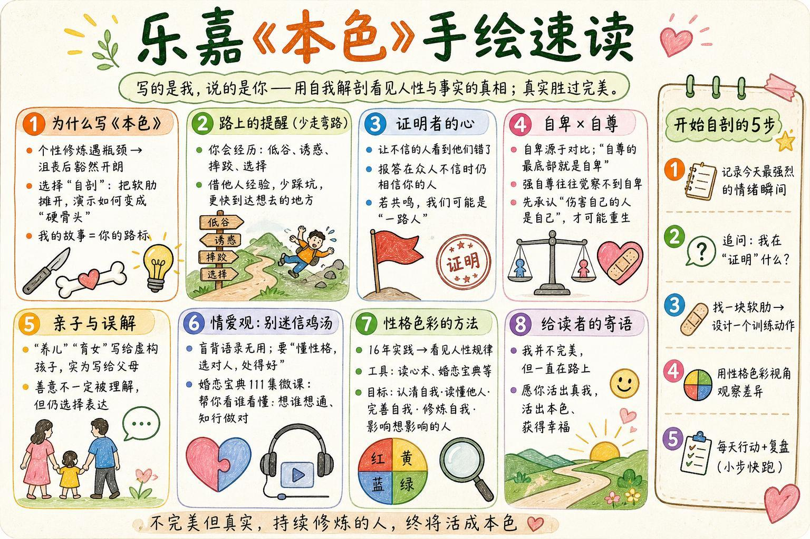
乐嘉介绍自己的书《本色》，称其不同于其他性格色彩理论书，是一本自我解剖之作。他通过现身说法，横刀切腹，力图让读者看清人性真相。书中表面写他的故事，实则说读者的人生，因为只有他先狠心解剖自己，读者才可能自剖。他提到自己曾很穷想赚钱，但看别人的成功故事只会感到妒忌和无奈，因为不知道对方如何苦尽甘来，是否也会像他一样躲着看A片麻痹自我。他希望有人能告诉他如何少走弯路。他写这本书是因为在性格修炼中遇到瓶颈，沮丧后豁然开朗，于是选择庖丁解人，展示软肋并演示如何将软肋变硬骨。书中20个话题中，他认为最能说明他本质的是“证明”，即一生所做都是为了让不相信他的人知道他们错了，并回报相信他的人。他还提到“自卑与自尊”是常见心理状态，自卑源于对比，自尊心强的人意识不到自卑。此外，“养儿育女”两篇文章是他杜撰的，却被传成他离过三次婚。关于“情爱”，他批评网上流传的乐嘉语录多是挑拨男女仇恨的屁话，强调要了解性格才能找到合适对象。
📖 全文解读（点开看全文）
嗨大家好，我是乐嘉。今天我要向大家介绍一本我比较喜欢的个人的作品叫本色。在迄今为止我出版的十一本书里面，除了这本以外，其余绝大多数的书都是性格色彩的理论书或者应用书。而本色这本书在我的作品当中有非常特殊的地位，因为它是一本我的自抛制作，通过我的自我解剖，我力图让你看清一些人性的真相和事实的真相。虽然这本书的阐述未必涵盖你所关心的全部，但是我一直在现身说法，横刀切腹，我就是希望能够做到真实。在这本书里面，表面上谈的是我的故事，但其实是在说你的人生。所以我一直在讲叫写的是我说的是你。因为我很清楚，如果我不先下狠手来解剖我自己，你断然不会自抛的。因为有些事儿可能你已经忘记了，有些事儿你也不愿意回忆。就算有些事你回忆了，你也未必肯下手。就算有些事你就算回忆了肯下手，你也不知道该怎么下手。自剖这件事儿，因为实在是太痛了。在这本书里面，我不想告诉别人我是一个个性圆满修炼至胜的人。但是我想告诉我的每一个朋友，虽然我性格修炼的还不够好，但是我在这条道路上面正在艰辛的前行。虽然有很多还没有过去的坎儿，但是我有更多已经走过的坎。我愿意把我过去怎么走过那段痛苦的岁月和过程说给你听。我会告诉你如果你准备走的话，你可能会经历一些什么，可能会在哪些地方摔跟头，可能会遇见哪些勾引，可能会做了哪些不同的选择，会得到怎样不同的结果。我相信在很久以前，我那个时候很穷，我很想赚钱。但我去看了很多的书，书里面的人告诉我，他那么有钱，他的生活多么的像国王，他以前多么的辛苦，现在已经苦尽甘来了。她说那些除了让我感觉到她在炫耀她已经高我一等以外，还是没有办法让我能够过到像她那样的生活。我看完别人的书，只会让我沉浸在深深的妒忌、无奈还有自责当中。毕竟我不知道他到底是怎么做到苦尽甘来的，我也不知道他在落魄悲伤看不见人生希望的时候，是不是会像我一样顾影自怜，躲在一个角落看A片麻痹自我，混沌度日。我非常希望有个人能够告诉我，他是怎么做到的，我是不是真的能够做到。我很清楚任何人的成功都要付出代价和努力，我只是在想怎么样可以少走一些不必要的弯路，早点到达我想去的地方。我知道写书的这个人没有义务告诉我这些，但是我一边在努力，一边在寻找。我传播性格色彩16年，性格色彩过去的日复一日、月复一月、年复一年，能够让我看到人性的规律和活出真实的自我的核心关键。我写本色这本书是因为在我个性修炼的道路当中，遇到了强大的瓶颈，尽我所能我也没有办法突破。但是在我沮丧以后，我突然之间有豁然开朗的感觉。这种欣喜我只能选择用最原始的方式把自己庖丁解人，让其他人能够看到我的软肋。然后我渐渐会演示给大家，怎么样子把你的软肋给变成你的硬骨头。在本册这本书里面，我自抛解读人性有20个话题。我自己个人对他们的理解是这样的，最能说明我是个什么东西的是证明。如果你觉得你自己是一个证明者，你这一生做的所有的事情都是希望让那些不相信你的人知道他们不相信你是错误的，而让那些在他人都不相信你的时候，那个相信你的人让他最终得到回报。如果你跟我有同样的想法，那我们可能是一路人。我们前世有缘在写这篇文章的时候，是我本书当中心最痛的。对绝大多数人来讲，最常见的两种心理状态就是自卑和自尊。我个人的自卑和自尊在一路成长的过程当中成全了我，也让我饱受其害。自卑源于对比，一个总在对比但是又无力改变的人是自卑的，而自尊的最底部就是自卑。自尊心强的人既意识不到自己的自卑，也无力积极的去转换。在自卑和自尊当中，首先你需要意识到是你自己伤害了自己，而别人伤害了你，你才有可能会重生。养儿和育女代表了我在子女教育当中的基本态度。但是很遗憾，这两篇我认为写的最棒的文章，写给15岁的女儿，写给18岁的儿子，这两个人其实是我杜撰出来的一个虚构的人物。但是在网上被好事之徒拿来说事儿，然后就以讹传讹，我变成了离过三次婚的混蛋。我自己是一个连情感问题都搞不定的人，还被人们称为情感专家。所以在这个世界上，有的时候做好事不一定会得到好报。但是我还是想了想，这两篇与其说是写给孩子的，但不如说是写给父母的。情爱这篇可能会让那些过去你如果在网上分转过一些文章，比方说叫什么乐嘉语录，什么乐嘉爱情语录之类的。如果你把过去这些屁话当成宝贝的话，疯狂的在转发，你可能会感到羞愧。因为那些爱情语录基本上都不是我讲的，他们听上去都是一腔正气，铁骨铮铮，但其实在我看来，绝大多数都是混账的屁话。除了挑拨刺激男性和女性之间的仇恨和强化那些封建礼教的毒害性，基本上我认为就是在煽动网络的民众的情绪。这些话对于那些盲目喜欢我的朋友，听上去可能会深重打击。因为你转发是因为喜欢我。但是我还是要跟你讲，如果你这一生希望能够找到靠谱的对象，希望能够有真正适合自己的婚姻，你必须对性格有通透的了解，否则你会付出代价的。不仅仅只是盲目的背诵那些名人语录，爱情话语没有用的。在喜马拉雅里面我有一张性格色彩的婚恋宝典专辑，总共有111集微课。我将过去16年我的心血浓缩成音频。我希望帮你在你的爱情和你的婚姻当中做到看谁看懂，想谁想通，并且知道不同性格的人到底当下应该做出什么样的抉择。不同性格的人到底你应该怎么相处才能够解决你当前的痛苦和。在做超级演说家导师的时候，当年我给自己的团队取名就叫本色。我当时对我的队员说，这个时代活着艰辛，想活出本色、活出真我、活出快乐不容易。我希望每一个人有朝一日都能够享受到本色的幸福，我希望本色这本书能够帮助你达到你自己应有的本色。就像我做性格色彩的初衷一样，不管你是洋春白雪还是夏里巴人，都可以通过性格色彩这种工具认清自我，读懂他人，完善自我，修炼自我，影响你想影响的那个人。在喜马拉雅的专辑性格色彩读心术当中，可以帮助你快速了解并且上乘性格色彩，从工作和生活各个维度来体验到性格色彩这个伟大工具对你的意义。话不多说，愿这两张专辑能够帮到你，愿你的生活，你的生命更加本色。